数值分析¶
约 10178 个字 预计阅读时间 51 分钟
课程架构
Basic Knowledge
- Chapter 1
- Mean value theorem
- Taylor expansion
- Roundoff error
Solution of Equations
- Chapter 2
- Solution of equations with one variable
- Chapter 6
- Direct Matrix Solver
- Chapter 7
- Iterative Matrix Solver
- Chapter 5
- Initial value problem
- Euler, Runge-kutta, multi-step
Convergence + Stability
Interpolation and approximation
-
Chapter 3: interpolation
- Lagrange polynomial
- Piecewise polynomial
-
Chapter 4
- Numerical differentiation
- Numerical integration
-
Chapter 8: approximation
- Orthogonal polynomials
- Least squares
- Chebyshev polynomial
Error
Chapter 1 数学基础 | Mathematical Preliminaries¶
本讲概述
本讲主要介绍数值计算中的误差类型和误差分析，以及IEEE 754浮点数表示。
1.2 舍入误差和计算机算术 | Roundoff Errors and Computer Arithmetic¶
1.2.1 截断误差和舍入误差 | Truncation Error and Roundoff Error¶
-
截断误差: 使用截断的(或者说有限的)求和来近似无穷级数的和->产生的误差
-
理论：$e=\sum\limits_{n=0}^{\infty} \frac{1}{n!} $
-
计算机: $e=\sum\limits_{n=0}^{N} \frac{1}{n!} $
-
-
舍入误差: 当计算机执行实数计算时产生的误差。这是因为计算机中的算术运算涉及到的数字只有有限位数。
- 理论：\(0.3333333\cdots\)
- 计算机: \(0.333333\)
1.2.2 截断法和舍入法 | Chopping and Rounding¶
使用舍入法或截断法产生的误差都叫做舍入误差。
- Chopping: 0.1119 -> 0.111，直接截断
- Rounding: 0.1119 -> 0.112，四舍五入
函数表示
Given a real number \(y = 0.d_1d_2d_3\ldots d_kd_{k+1}\ldots \times 10^n\)(which is called Normalized decimal floating-point form of a real number)
1.2.3 绝对误差与相对误差 | Absolute error and relative error¶
Denote \(p^*\) as the approximation of \(p\).
- Absolute error: \(|p^* - p|\)
- Relative error: \(\frac{|p^* - p|}{|p|}\)
近似产生的误差
chopping:
Rounding:
误差产生
- 两个近乎相等的数相减二导致有效数字的相消，例如：\(a=0.123456789, b=0.123456788\)，两者本来有9位有效数字，但是相减后只剩下1位有效数字。
- 如果有限位的表示或计算产生了误差，则除以一个小数（或者乘以一个大数）会放大绝对误差。
误差计算举例：
Evaluate \(f(x) = x^3 - 6.1x^2 + 3.2x + 1.5\) at \(x = 4.71\) using 3-digit arithmetic(3位有效数字).
| \(x\) | \(x^2\) | \(x^3\) | \(6.1x^2\) | \(3.2x\) | |
|---|---|---|---|---|---|
| exact | \(4.71\) | \(22.1841\) | \(104.487111\) | \(135.32301\) | \(15.072\) |
| Chopping | \(4.71\) | \(22.1\) | \(104.\) | \(6.1*22.1=134.81\approx134.\) | \(15.0\) |
| Rounding | \(4.71\) | \(22.2\) | \(105.\) | \(6.1*22.2=135.42\approx135.\) | \(15.1\) |
Exact value: \(f(4.71) = 104.487111 - 135.32301 + 15.072 + 1.5 = -14.263899\)
Chopping: \(f(4.71) = 104 - 134 + 15.0 + 1.5 = -13.5\)
- Relative error: \(\frac{|-14.263899 + 13.5|}{|-14.263899|} \approx 5.35\%\)
Rounding: \(f(4.71) = 105 - 135 + 15.1 + 1.5 = -13.4\)
- Relative error: \(\frac{|-14.263899 + 13.4|}{|-14.263899|} \approx 6.06\%\)
可见，有时候舍入误差比截断误差更大。
但现在的误差还是太大了！介绍——秦九韶算法！
乘法较多会导致式子的误差较大，此时可以使用秦九韶算法（其实就是不断提取\(x\)）来减少乘法的次数。
把一个多项式\(f(x) = a_nx^n + a_{n-1}x^{n-1} + \ldots + a_1x + a_0\)写成如下形式：
然后从最内层开始计算。
将上例改写成秦九韶算法：
Chopping:
Relative error: \(\frac{|-14.263899 + 14.2|}{|-14.263899|} \approx 0.44\%\)
Rounding:
Relative error: \(\frac{|-14.263899 + 14.3|}{|-14.263899|} \approx 0.25\%\)
可见，此时误差明显减小了。
1.3 算法和收敛性 | Algorithms and Convergence¶
稳定性 | Stability¶
一个算法，如果初始数据的小变化会导致最终结果的小变化，则称为稳定(stable)；否则称为不稳定(unstable)。
一个算法，如果只有在某些初始数据的选择下才是稳定的，则称为条件稳定(conditionally stable)。
误差增长 | The growth of errors¶
假设\(E_0 > 0\)是初始误差(initial error)，\(E_n\)是第\(n\)步的误差。
- 如果\(E_n \approx CnE_0\)，则称为线性增长(linear growth)。
线性增长的误差通常是无法避免的，当\(C\)和\(E_0\)都很小的时候，结果通常是可以接受的。
- 如果\(E_n \approx C^nE_0\)，则称为指数增长(exponential growth)。
指数增长的误差应该避免，因为即使\(E_0\)很小，\(C^n\)也会变得很大。这会导致不可接受的不准确性。
收敛速度 | Convergence rate¶
使用\(O\)符号来表示收敛速度。
假设\(\lim_{h\to 0} F(h) = L\)，\(\lim_{h\to 0} G(h) = 0\)。如果存在正常数\(K\)使得
对于足够小的\(h\)成立，则记为\(F(h)=L+O(G(h))\)
我们通常取\(G(h)=h^p,(p>0)\)，并对最大的\(p\)值感兴趣。
求当\(h\to 0\)时下列函数的收敛速度
\(F(h) = \frac{\sin h}{h}\), \(\lim_{h\to 0}\frac{\sin h}{h} = 1\)
解: \(F(h)-L=\frac{\sin h}{h}-1 = \frac{\sin h-h}{h} \sim \frac{h-\frac{h^3}{6}+o(h^3)-h}{h} \sim-\frac{h^2}{6}\leq K|h^2|\)
所以收敛速度为\(O(h^2)\)。
1.4 IEEE 754 FLOATING POINT REPRESENTATION¶
二进制的科学计数法：\(x = \pm 1.d_1d_2d_3\ldots d_k \times 2^n\)，这里的\(d_i\)是二进制的数字,\(1.d_1d_2d_3\ldots d_k\)为有效位数(Significand)。
在计算机里有两种表示方法，分别是Single(32位)和double(64位)。均为下图的形式。
- \(S\)代表符号位(sign bit)。\(S\)为\(0\)表示非负数，\(S\)为\(1\)表示负数。
- 有效位数(\(Significand = 1 + Fraction\)) 中\(1\)是默认的，我们只存储小数点后面的位数(即Fraction)。
- \(Fraction\) 代表尾数部分(也称作mantissa)。
- Single: \(23\) \(bits\)
- Double: \(52\) \(bits\)
- \(Exponent\) 表示指数部分(也称作characteristic)。
- Single: \(8\) \(bits\)
- Double: \(11\) \(bits\)
- excess representation(偏移表示法) \(=\) actual exponent \(-\) bias，其中：
- Single: \(bias = 127\) \(bits\)
- Double: \(bias = 1023\) \(bits\)
- 指数为全 \(0\) 和全 \(1\) 时用作特殊值处理
Single & Double的值域
Single的值域
- 最小值：
- Exponent = 00000001, Fraction = 000...000
-
\[x = \pm (1+0.0) \times 2^{1-127} = \pm 1.0 \times 2^{-126} \approx \pm 1.2 \times 10^{-38}\]
-
最大值：
- Exponent = 11111110, Fraction = 111...111
-
\[x = \pm (1+0.111\ldots 111) \times 2^{254-127} \approx \pm 2.0 \times 2^{127} \approx \pm 3.4 \times 10^{38}\]
Double的值域
- 最小值：
- Exponent = 00000000001, Fraction = 000...000
-
\[x = \pm (1+0.0) \times 2^{1-1023} = \pm 1.0 \times 2^{-1022} \approx \pm 2.2 \times 10^{-308}\]
-
最大值：
- Exponent = 11111111110, Fraction = 111...111
-
\[x = \pm (1+0.111\ldots 111) \times 2^{2046-1023} \approx \pm 2.0 \times 2^{1023} \approx \pm 1.8 \times 10^{308}\]
Single & Double的十进制精度
Single的十进制精度
- 最小分度: \(2^{-23}\)
- \(\log_{10}{2^{-23}}\approx -6.92\)
- 所以约为小数点后六位有效数字
Double的值域
- 最小分度: \(2^{-52}\)
- \(\log_{10}{2^{-52}}\approx -15.65\)
- 所以约为小数点后十六位有效数字
十进制->IEEE754 浮点数
Represent \(–0.75\)
- Convert to binary: \(0.75 = 0.11\)
- Normalize: \(0.11 = 1.1 × 2^{–1}\)
- Sign bit: \(S = 1\)
- Exponent:
- Single: \(–1 + 127 = 126 = 01111110\)
- Double: \(–1 + 1023 = 1022 = 01111111110\)
- Fraction:
- Single: \(0.1 = 100\cdots 00\)，共23位
- Double: \(0.1 = 100\cdots 00000\)，共52位 \(\therefore\) IEEE 754 Representation:
- Single: \(1\ 01111110\ 100\cdots 00\)
- Double: \(1\ 01111111110\ 100\cdots 00000\)
IEEE754 浮点数->十进制
What number is represented by the single-precision float 11000000101000…00
- Sign bit: \(S = 1\)
- Exponent: \(E = 10000001 = 129\)
- Actual exponent: \(E - 127 = 2\)
- Fraction: \(01000\cdots 00\)
- Significand: \(1.01000\cdots 00 = 1.25\)
- \(\therefore\) Number: \(–1.25 × 2^2 = –5.0\)
Chapter 2 一元方程的求解 | Solutions of Equations in One Variable¶
2.0 停机程序 | Stopping procedure¶
我们可以选择一个精度要求\(\epsilon\)，逐步迭代，直到满足下列条件之一：
- \(|x_{i+1} - x_i| < \epsilon\)
- \(|f(x_{i+1})| < \epsilon\)
- \(\frac{|x_{i+1} - x_i|}{|x_{i+1}|} < \epsilon\)
如果\(|x_{i+1} - x_i|\)收敛于0而序列本身发散 ，1号会失效。
也有可能\(f(x)\)与0很接近，但是\(x_n\)与\(x\)差别很大，2号也不行了。
3号条件是能运用的最好的停机准则，因为它最接近测试相对误差。
2.1 二分法 | Bisection Method¶
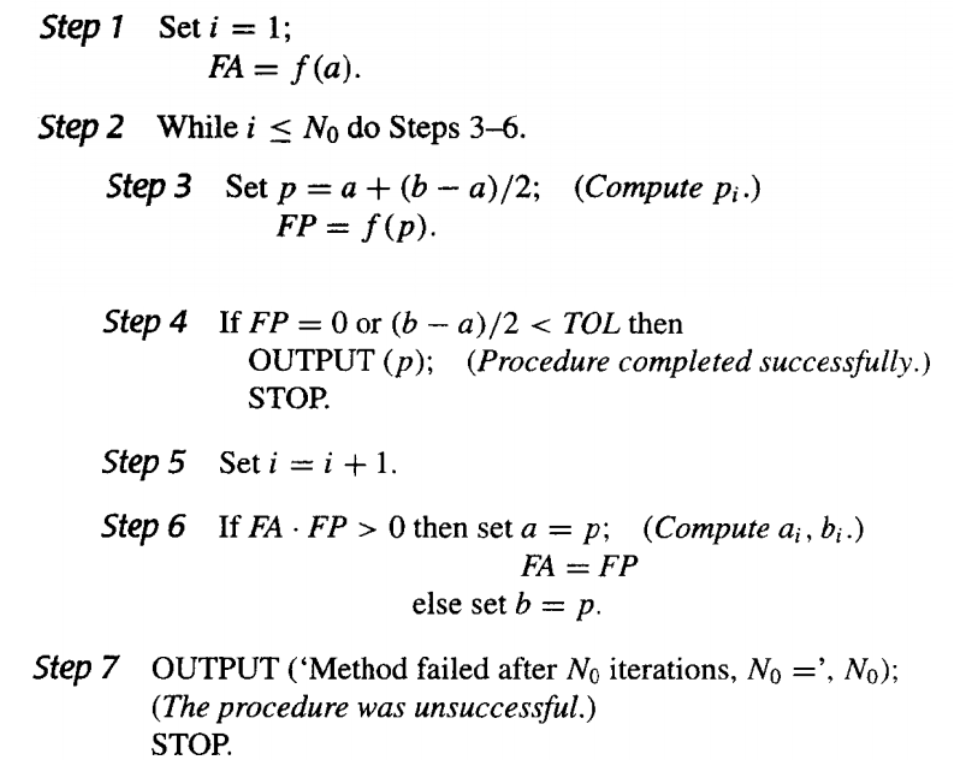
为什么要用a+(b-a)/2，而不用(b+a)/2？
- 因为a和b可能是很大的数，相加可能会溢出。
- 因为a和b可能是很小的数，相加可能会产生舍入误差。用此方法可以确保a+(b-a)/2落在a和b之间。
- 例如，用截断保留2位有效数字，a=0.91，b=0.93，(a+b)/2=1.8/2=0.9，而a+(b-a)/2=0.91+(0.93-0.91)/2=0.92。
2.2 不动点迭代 | Fixed-Point Iteration¶

不动点的存在性和唯一性的充分条件：
a. \(g\in C[a,b]\)且\(g(x)\in [a,b], \forall x\in [a,b]\)，则\(g\)在\([a,b]\)上有不动点。
b. \(|g'(x)|\leq k < 1, \forall x\in (a,b)\)，则该不动点是唯一的。
则对于任意\(p_0\in [a,b]\)，不动点迭代序列\(p_{n+1}=g(x_n)\)收敛于不动点。
且我们有误差限\(|p_n-p| \leq \frac{k^n}{1-k}|p_1-p_0|\)，这将收敛速率和一阶导数的界联系起来。
误差界分析
2.3 牛顿迭代法 | Newton's Method¶
就是用切线逼近零点，然后求切线与x轴的交点，作为下一个点，如此往复。

定理：设\(f\in C^2[a,b]\)，如果\(p\in [a,b]\)满足\(f(p)=0\)且\(f'(p)\neq 0\)，则存在\(\delta>0\)，使得对任何初始值\(p_0\in (p-\delta, p+\delta)\)，牛顿迭代法产生收敛于\(p\)的序列\(\{p_n\}_{n=1}^\infty\)。
证明：
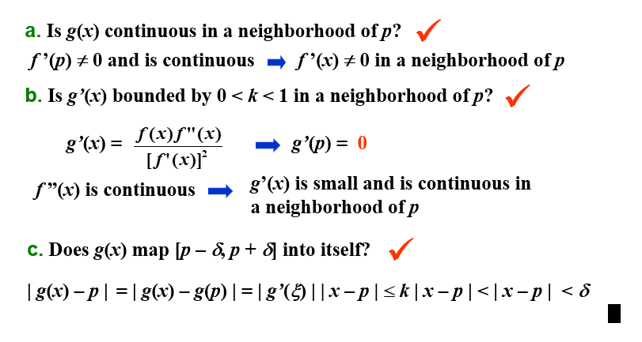
牛顿迭代法的收敛性取决于初始近似值的选择。
2.4 迭代法的误差分析 | Error Analysis for Iterative Methods¶
假设\(\{p_n\}_{n=0}^\infty\)收敛于\(p\)，其中对\(\forall p_n \neq p\)。如果存在正数\(\lambda\)和\(\alpha\)，使得
则称\(\{p_n\}_{n=0}^\infty\)是\(\alpha\)阶收敛的(converges to p of order α)，\(\lambda\)称为渐进误差常数(asymptotic error constant)。
一般具有高阶收敛性的序列收敛速度更快。
-
如果\(\alpha=1\)，则该序列是线性收敛的(linearly convergent)。
-
如果\(\alpha=2\)，则该序列是二次收敛的(quadratically convergent)。
不动点法¶
不动点法的收敛阶和渐进误差常数：
因此，如果\(g'(p)\neq 0\)，则不动点迭代法是线性收敛的，且渐进误差常数为\(|g'(p)|\)。
牛顿迭代法¶
牛顿迭代法的收敛阶和渐进误差常数：
由泰勒展开：
因此，牛顿迭代法是二次收敛的，且渐进误差常数为\(\frac{|f''(p)|}{2|f'(p)|}\)。
不动点法的多重根情况¶
如果\(p\)是\(g(x)\)的不动点，存在正整数\(m\)，使得\(g'(p)=g''(p)=\ldots=g^{(m-1)}(p)=0\)，且\(g^{(m)}(p)\neq 0\)，则称\(p_n = g(p_{n-1})\)以阶\(m\)收敛于\(p\)，渐进误差常数为\(\frac{|g^{(m)}(p)|}{m!}\)。
牛顿法的多重根情况¶
如果\(p\)是\(f\)的\(m\)重零点，则有\(f(x)=(x-p)^mq(x)\)，记\(g(x)=x-\frac{f(x)}{f'(x)}\)，牛顿法即为 \(p_n=g(p_{n-1})\)
所以
由不动点法的迭代情况可知，此时为线性收敛，不为二次收敛。
牛顿法多重根下的优化¶
定义
如果\(p\)是\(f\) 的\(m\)重零点，\(f(x)=(x-p)^mq(x)\)，则
又\(q(p)\neq 0\)，且
所以\(p\)是\(\mu(x)\)的单根，那么我们对\(\mu\)应用牛顿迭代法，就有
这就是让有多重根的牛顿法二次收敛的方法。
- 要求二阶导
- 分母由两个接近于0的数相减，会引起严重的舍入误差。
2.5 加速收敛 | Accelerating Convergence¶
二次收敛是很少可以得到的，我们在日常中总会碰到线性收敛。为了考虑如何加速线性收敛序列的收敛速度，下面介绍——AITKEN\(\Delta^2\)方法。
AITKEN\(\Delta^2\)方法¶
\(\Delta\)
对于给定的序列，向前差分(forward difference)定义为\(\Delta p_n = p_{n+1}-p_n\)，对于更高的幂，我们有\(\Delta^k p_n = \Delta(\Delta^{k-1}p_n)\)，比如\(\Delta^2 p_n = \Delta(\Delta p_n)= \Delta(p_{n+1}-p_n) = (p_{n+2}-p_{n+1}) -(p_{n+1}-p_n)\)
假设\(\{p_n\}_{n=0}^\infty\)是线性收敛的，其极限为\(p\)。
为了便于构造比\(\{p_n\}_{n=0}^\infty\)收敛更快的序列\(\{\hat{p}_n\}_{n=0}^\infty\)，我们假设\(p_n-p, p_{n+1}-p, p_{n+2}-p\)的符号一致，又假设\(n\)足够大，有
从而
解出\(p\)，得到
于是，我们可以构造序列\(\{\hat{p}_n\}_{n=0}^\infty\)，其中
这样定义序列的方法就是AITKEN\(\Delta^2\)法
为什么说更快？
可以证明
怎么迭代？
其实还是用序列本身的迭代法，不过在计算值的时候采取了AITKEN\(\Delta^2\)法。
构造按如下顺序：
Steffensen 方法¶
这个方法假设\(\hat{p_0}\)比\(p_2\)更好地逼近\(p\)，从而把上述过程第三行的不动点迭代应用到\(\hat{p_0}\)上
算法如下：
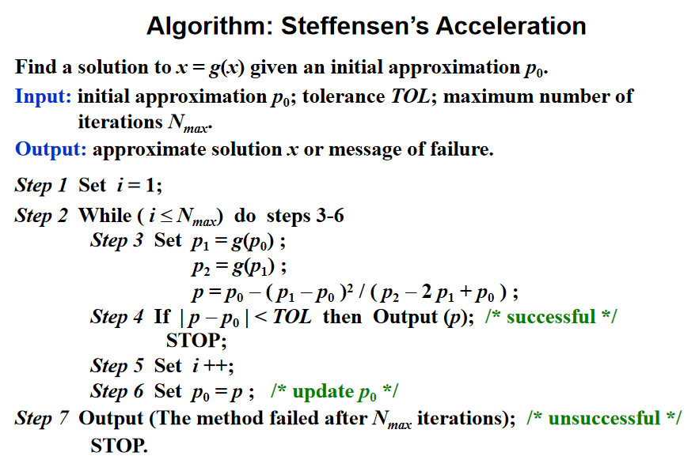
注意\(\Delta^2 p_n\)可能为0，如果发生，则终止并选取\(p_2^{(n-1)}\)为近似解。
我们一般要求\(g'(p)\neq 0\)，则在邻域内Steffensen法是二次收敛的
Chapter 3 插值和多项式逼近 | Interpolation and Polynomial Approximation¶
3.1 插值和 Lagrange 多项式 | Interpolation and Lagrange Polynomials¶
构造 Lagrange 多项式¶
拉格朗日插值就是构造一个次数至多为 \(n\) 次的多项式使它通过 \(n+1\) 个给定的点，这个多项式就是拉格朗日多项式。
\(n = 1\)
构造\(P(x)=a_0+a_1x\)，使得\(P(x_0)=y_0\)，\(P(x_1)=y_1\)。
则\(P(x)=y_0+\frac{y_1-y_0}{x_1-x_0}(x-x_0)=\frac{x-x_1}{x_0-x_1}y_0+\frac{x-x_0}{x_1-x_0}y_1\)。
其中\(\frac{x-x_1}{x_0-x_1}\)和\(\frac{x-x_0}{x_1-x_0}\)分别记作\(L_{1,0}(x)\)和\(L_{1,1}(x)\)（第一个下标即为\(n\)的值，第二个下标为样本点的序号），这称为拉格朗日基函数（Lagrange Basis）。
可以知道，拉格朗日基函数总是满足Kronecker Delta函数\(\delta_{ij}\)。
推广到\(n\)次插值，构造\(P(x)=a_0+a_1x+\cdots+a_nx^n\)，使得\(P(x_i)=y_i\)，\(i=0,1,\cdots,n\)。就是要找到 \(L_{n,i}(x)\) 使得 \(L_{n,i}(x_j) = \delta_{ij}\)
分析可知，这里的\(L_{n,i}(x)\)有 \(n\) 个根，分别为\(x_0,x_1,\cdots,x_{i-1},x_{i+1},\cdots,x_n\)。所以可以构造出
又因为\(L_{n,i}(x_i)=1\)，所以
即
于是我们根据拉格朗日基函数构造出了 \(n\) 次拉格朗日插值多项式
Lagrange 多项式的唯一性¶
对 \(n\) 个不同的点 ， \(n\) 次拉格朗日插值多项式是唯一的
证明：
如果不唯一，假设存在另一个多项式\(Q_n(x)\)，使得\(Q_n(x_i)=y_i\)，\(i=0,1,\cdots,n\)，且\(Q_n(x)\neq P_n(x)\)。
则\(R_n(x)=P_n(x)-Q_n(x)\)是一个次数不超过\(n\)的多项式，且\(R_n(x_i)=0\)，\(i=0,1,\cdots,n\)。
由于\(R_n(x)\)的次数不超过\(n\)，\(n\)次多项式不可能有 \(n+1\) 个解，所以\(R_n(x)=0\)，即\(P_n(x)=Q_n(x)\)，与假设矛盾。
如果 对 \(n\) 个点 运用 超过\(n\) 次的拉格朗日插值多项式，那么得到的多项式就不唯一了。
例如 \(P(x)=L_n\left(x\right)+p(x)\prod\limits_{i=0}^n\left(x-x_i\right)\)
拉格朗日逼近的余项¶
假定\(a\leq x_0<x_1<\cdots<x_n\leq b\)，\(f\in C[a,b]\)，\(P_n(x)\)是\(f(x)\)在\(x_0,x_1,\cdots,x_n\)上的拉格朗日插值多项式，则对任意\(x\in[a,b]\)，存在\(\xi(x)\in(a,b)\)，使得
证明
记\(R_n(x)=f(x)-P_n(x)\)，则\(R_n(x)\)是一个次数不超过\(n\)的多项式，且\(R_n(x_i)=0\)，\(i=0,1,\cdots,n\)。所以\(R_n(x)\)可记作\(C(x)\prod\limits_{i=0}^n(x-x_i)\)
固定一个点\(x\) (\(x\neq x_i\)) 时，记\(g(t)=R_n(t)-C(x)\prod\limits_{i=0}^n(t-x_i)\)，则\(g(x)=0\)，\(g(x_i)=0\)，\(i=0,1,\cdots,n\)，所以\(g(t)\)存在\(n+2\)个不同的零点
根据推广的Rolle定理，存在\(\xi(x)\in(a,b)\)，使得\(g^{(n+1)}(\xi(x))=0\)，即
所以\(C(x)=\frac{f^{(n+1)}(\xi(x))}{(n+1)!}\)，所以\(R_n(x)=\frac{f^{(n+1)}(\xi(x))}{(n+1)!}\prod\limits_{i=0}^n(x-x_i)\)
因为这里的\(f^{(n+1)}(\xi(x))\)是不知道的，所以我们经常用\(f^{(n+1)}(x)\)的上界来估计余项。
分析余项可知，对于小于等于 \(n\) 次的多项式 \(f\) ，经过\(n\)次拉格朗日插值得到的余项为0，得到的多项式就是 \(f\) 本身
这里限制了\(f\)为多项式
例子 1¶
假设为 \(x\in [0,1]\) 的函数 \(f(x)=e^x\) 做一个表格。设表中每一项精确的位数是 \(d\geq 8\)，相邻 \(x\) 值之差即步长为 \(h\)。为使线性插值（即一次Lagrange插值）的误差不超过 \(10^{-6}\)，\(h\)应该是多少？
解：
假设 \([0, 1]\) 被分成 \(n\) 个等距的子区间 \([x_0, x_1], [x_1, x_2], \cdots, [x_{n-1} , x_n]\)，\(x\) 在区间 \([x_k, x_{k+1}]\) 中。则误差估计为
所以 \(h\leq 1.72\times 10^{-3}\)。我们不妨取 \(h=10^{-3}\)，则 \(n=1000\)。
例子 2¶

给三个点，我们有两种方法来线性插值。往往，内插(Intrapolation) 会比 外插(Extrapolation) 更加准确。

高次的拉格朗日插值一般会比低次的插值更加准确，但是这不一定总成立。
Neville 迭代插值法¶
记号说明： 设 \(f\) 在 \(x_0,x_1,\cdots,x_n\) 上有定义，\(m_1,m_2,\cdots,m_k\) 是 \(k\) 个不同的整数，\(0\leq m_i\leq n\)，\(i=1,2,\cdots,k\)。记在这 \(k\) 个点上与 \(f(x)\) 相同的拉格朗日多项式为 \(P_{m_1,m_2,\cdots,m_k}(x)\)。
定理： 设 \(f\) 在 \(x_0,x_1,\cdots,x_n\) 上有定义，让 \(x_i\) 和 \(x_j\) 是这个集合中的两个不同的数。则
描述了对 \(f\) 在 \(x_0,x_1,\cdots,x_k\) 这 \(k+1\)个点 上的 \(k\) 次插值多项式。
五个点

证明：
对于任意 \(0\leq r\leq k\)，\(r\neq i\) 和 \(r\neq j\)，分子上的两个插值多项式在 \(x_r\) 处都等于 \(f(x_r)\)，所以 \(P(x_r)=f(x_r)\)。
分子上的第一个多项式在 \(x_i\) 处等于 \(f(x_i)\)，而第二个多项式在 \(x_i\) 处为0，所以 \(P(x_i)=f(x_i)\)。同理 \(P(x_j)=f(x_j)\)。
所以 \(P(x)\) 在 \(x_0,x_1,\cdots,x_k\) 上与 \(f(x)\) 相同，因为 \(P(x)\) 是 \(k\) 次多项式，所以 \(P(x)=P_{0,1,\cdots,k}(x)\)。
伪代码¶

3.2 Divided Differences | 差商¶
Newton's Interpolatory Divided-Difference formula | 差商型 Newton 插值多项式¶
设 \(P_n(x)\) 是函数 \(f\) 在点 \(x_0, x_1,\cdots,x_n\) 上的拉格朗日多项式，\(f\) 关于 \(x_0,x_1,\cdots,x_n\) 的差商被用于将 \(P_n(x)\) 表示为：
其中 \(f[x_0,x_1,\cdots,x_n]\) 是 \(f\) 关于 \(x_0,x_1,\cdots,x_n\) 的差商，通过代值可以得到
我们记 \(f[x_0], f[x_0,x_1],\cdots,f[x_0,x_1,\cdots,x_n]\) 为 \(f\) 关于 \(x_0,x_1,\cdots,x_n\) 的 \(0\) 阶差商，\(1\) 阶差商，\(\cdots\)，\(n\) 阶差商。
六个点的三阶差商计算的例子

同时，我们称
为差商型 Newton 插值多项式(Newton's Interpolatory Divided-Difference formula)。
伪代码¶

差商和导数的关系¶
一阶差分¶
将中值定理应用到 \(f\) 在 \([x_0,x_1]\) 上，得到
\(n\) 阶差分¶
设 \(f\in C^n[a,b]\) 且 \(x_0,x_1,\cdots,x_n\in[a,b]\)，则存在 \(\xi\in(a,b)\)，使得
证明：
设 \(g(t)=f(t)-P_n(t)\)，则 \(g(x_i)=0\)，\(i=0,1,\cdots,n\)。所以 \(g(t)\) 在 \([x_0,x_n]\) 上有 \(n+1\) 个零点，根据推广的 Rolle 定理，存在 \(\xi\in(a,b)\)，使得 \(g^{(n)}(\xi)=0\)，即
所以 \(P_n^{(n)}(\xi)=f^{(n)}(\xi)\)，因为
所以
PPT上采用的证明方法

差分记号引入¶
如果每个点都连续等步长排列，记步长为\(h\)，令\(x_i=x_0+ih\)，则
引入向前差分(forward difference)记号：
引入向后差分(backward difference)记号：
引入中心差分(central difference)记号：
其中
等距下的向前差商公式¶
在等距情况下，向前差商的公式可表示为：
这里的 \(\begin{pmatrix}s\\k\end{pmatrix}\) 是组合数，即 \(\frac{s(s-1)\cdots(s-k+1)}{k!}\)
等距下的向前差分公式¶
由向前差分的记号可知道
由此可推广得出
所以
此即为向前差分的公式
等距下的向后差商公式¶
重排插值节点再计算，此时：
在等距情况下，记 \(x_s=x_n+sh=x_i+(s+n-i)h\)，有
这里的 \(\begin{pmatrix}-s\\k\end{pmatrix}\) 是组合数，即 \(\frac{-s(-s-1)\cdots(-s-k+1)}{k!}=(-1)^k \cdot \frac{s(s+1)\cdots(s+k-1)}{k!}\)
等距下的向后差分公式¶
由向后差分的记号可知道
由此可推广得出
所以
3.3 Hermite Interpolation | Hermite 插值¶
Hermite 插值的目标是找到一个插值多项式
Osculating polynomials | 密切多项式¶
在 \(x_0,x_1,\cdots,x_n\) 上逼近 \(f\in C^m[a,b]\) 的密切多项式(osculating polynomial) 是具有以下性质的多项式 \(P_n(x)\)：
- \(P_n(x)\) 在 \(x_0,x_1,\cdots,x_n\) 上与 \(f(x)\) 相同
- 对每个 \(x_i\)，\(P_n(x)\) 和 \(f(x)\) 在 \(x_i\) 处的前 \(m_i\) 阶导数相同
- 因此，我们可以得到 \(\sum\limits_{i=0}^n(m_i+1)=\sum\limits_{i=0}^nm_i+(n+1)\) 个条件，于是 \(P_n(x)\) 是一个次数至多为 \(\sum\limits_{i=0}^nm_i+n\) 的多项式
我们给出密切多项式的定义：
定义： 设 \(x_0,x_1,\cdots,x_n\) 是 \([a,b]\) 上的 \(n+1\) 个不同的点，\(m_0,m_1,\cdots,m_n\) 是 \(n+1\) 个非负整数，假设$ f\in C^m[a,b]$，其中 \(m=\max\limits_{0\leq i\leq n}m_i\)。逼近 \(f\) 的密切多项式 \(P_n(x)\) 是使得下式成立的最小次数的多项式：
- 当 \(n=0\) 时，逼近 \(f\) 的密切多项式是 \(f\) 在 \(x_0\) 处的 \(m_0\) 阶 Taylor 多项式。
- 当 \(m_i=0\) 时，密切多项式就是对 \(f\) 在 \(x_0,x_1,\cdots,x_n\) 上插值的 \(n\) 次拉格朗日插值多项式。
Hermite 插值多项式¶
对密切多项式 \(m_i=1\) 的情况，我们定义其为 Hermite 多项式。也就是说，多项式 \(P(n)\) 和它的一阶导数 \(P'(n)\) 在 \(x_i\) 处与 \(f\) 和 \(f'\) 相同。
特殊例子¶
假设 \(x_0\neq x_1 \neq x_2\)，给定 \(f(x_0),f(x_1),f(x_2),f'(x_1)\)，找到多项式使得\(P(x_i)=f(x_i)\)，\(P'(x_1)=f'(x_1)\)。
首先，其次数为3次，我们猜想其形式为
其中\(h_i(x_j)=\delta_i(x_j),h'_i(x_1)=0,\hat{h}_1(x_i)=0,\hat{h}'_1(x_1)=1\)。
根据这个猜想，我们试图构造出 \(h_i(x)\) 和 \(\hat{h}_1(x)\) 。
首先，我们可以用拉格朗日同样的方法构造出三次多项式\(h_i(x)\)，使得\(h_i(x_j)=\delta_i(x_j)\)，\(h'_i(x_1)=0\)，\(i=0,1,2\)。
对于\(h_0(x)\)，有根\(x_1,x_2\)，且因为 \(h'_0(x_1)=0\) 所以 \(x_1\) 是 \(h_0(x)\) 的二重根，所以其形式为
又因为\(h'_0(x_0)=1\)，所以
类似地，我们可以得到
对于\(h_1(x)\)，有根\(x_0,x_2\)，都是单根。所以其形式为
通过计算 \(h_1(x_1)=1\)，\(h'_1(x_1)=0\)，可以得到 \(A\) 和 \(B\) 的值。此处略。
然后，我们构造\(\hat{h}_1(x)\)，使得\(\hat{h}_1(x_i)=0\)，\(\hat{h}'_1(x_1)=1\)。对于\(\hat{h}_1(x)\)，有根\(x_0,x_1,x_2\)，所以
又因为\(\hat{h}'_1(x_1)=1\)，所以可以通过计算得到 \(C\) 的值。此处略。
一般情况¶
如果已知 \(f(x_0),f(x_1),\cdots,f(x_n)\) 和 \(f'(x_0),f'(x_1),\cdots,f'(x_n)\)，则可以构造出 Hermite 插值多项式
其中\((2n+1)\)阶多项式\(h_i(x_j)=\delta_i(x_j),h'_i(x_j)=0,\hat{h}_i(x_j)=0,\hat{h}'_i(x_j)=\delta_i(x_j)\)。
对于\(h_i(x)\)，有根\(x_0,x_1,\cdots,x_{i-1},x_{i+1},\cdots,x_n\)，且因为 \(h'_i(x_j)=0(j\neq i)\) 所以 \(x_j\) 是 \(h_i(x)\) 的 \(2\) 重根，所以其形式为
这里的常系数改变是因为引入 \(L_{n,i}(x)\) 的话，它相较前面的有额外系数
因为\(h_i(x_i)=1\)，\(h'_i(x_i)=0\)，所以
对于\(\hat{h}_i(x)\)，有根\(x_0,x_1,\cdots,x_n\)，且因为 \(\hat{h}'_i(x_j)=0(j\neq i)\)，\(\hat{h}'_i(x_i)=1\) 所以 \(x_i\) 是 \(\hat{h}_i(x)\) 的 \(1\) 重根，其余的都是 \(2\) 重根，所以其形式为
因为\(\hat{h}'_i(x_i)=1\)，所以
余项¶
如果 \(a=x_0<x_1<\cdots<x_n=b\)，\(f\in C^{2n}[a,b]\)，余项为
3.4 Cubic Spline Interpolation | 三次样条插值¶
Piecewise-polynomial approximation | 分段多项式逼近¶
最简单的分段多项式逼近是分段线性逼近，即在每个子区间上用一个一次多项式逼近函数 \(f\)。但是，分段线性逼近的函数不光滑，所以我们希望用更高次的多项式来逼近 \(f\)。

一个可替代的方法是使用 Hermite 插值多项式。例如，如果 \(f\) 和 \(f'\) 的值在每一个点 \(x_i\) 处都已知，那么我们可以在每个子区间上使用一个三次多项式来逼近 \(f\)。这样的逼近是光滑的，但是为了将该多项式应用于一般插值，需要知道所有的 \(f'\) 的值，这是不现实的。
由此，我们引入了三次样条插值。
Cubic spline interpolation | 三次样条插值¶
三次样条的构造不假设插值函数的导数值与原函数的导数值相等，即使在插值点处也如此。
给定在 \([a,b]\) 上的 \(n+1\) 个点 \(x_0,x_1,\cdots,x_n\)，\(a=x_0<x_1<\cdots<x_n=b\)，以及 \(f\)。三次样条插值是一个函数 \(S(x)\)，满足以下条件：
- \(S(x)\) 在每个子区间 \([x_i,x_{i+1}]\) 上是一个三次多项式，\(i=0,1,\cdots,n-1\)
- \(S(x_i)=f(x_i)\)，\(i=0,1,\cdots,n\)
- \(S_{i+1}(x_{i+1})=S_i(x_{i+1})\)，\(i=0,1,\cdots,n-2\)
- \(S'_{i+1}(x_{i+1})=S'_i(x_{i+1})\)，\(i=0,1,\cdots,n-2\)
- \(S''_{i+1}(x_{i+1})=S''_i(x_{i+1})\)，\(i=0,1,\cdots,n-2\)
- 下列的边界条件之一成立：
- \(S''(x_0)=S''(x_n)=0\)，称为自由或自然边界(free or natural boundary)
- \(S'(x_0)=f'(x_0)\)，\(S'(x_n)=f'(x_n)\)，称为固支边界(clamped boundary)
- 其他边界条件（上面两个条件其实已经足以满足目的了）
我们介绍一种构造三次样条插值的方法：
Method of Bending Moments¶
记 \(h_j=x_j-x_{j-1}\)，在 \(x\in[x_{j-1},x_j]\) 上，\(S(x)=S_j(x)\)，\(S'(x)=S'_j(x)\)，\(S''(x)=S''_j(x)\)。
因为 \(S(x)\) 是一个三次多项式，所以 \(S''_j(x)\) 是一个一次多项式，由端点值决定，假设 \(S''_j(x_{j-1})=M_{j-1}\)，\(S''_j(x_j)=M_j\)。那么对于 \(x\in[x_{j-1},x_j]\)，有
积分得到
再积分得到
\(A_j\) 和 \(B_j\) 是常数，可以通过 \(S_j(x_{j-1})=y_{j-1}\) 和 \(S_j(x_j)=y_{j}\) 得到。
所以
所以，我们的目的就是求出 \(M_j\)，\(j=0,1,\cdots,n\)。
因为 \(S'\) 是连续的，所以
在 \([x_{j-1},x_j]\) 上，\(S'_j(x)=-M_{j-1}\frac{(x_j-x)^2}{2h_j}+M_j\frac{(x-x_{j-1})^2}{2h_j}+f[x_{j-1},x_j]-\frac{M_j-M_{j-1}}{6}h_j\)
在 \([x_j,x_{j+1}]\) 上，\(S'_{j+1}(x)=-M_{j}\frac{(x_{j+1}-x)^2}{2h_{j+1}}+M_{j+1}\frac{(x-x_{j})^2}{2h_{j+1}}+f[x_j,x_{j+1}]-\frac{M_{j+1}-M_{j}}{6}h_{j+1}\)
有 \(S'_{j+1}(x_j)=S'_j(x_j)\)，所以我们可以得到 \(M_{j-1}, M_j, M_{j+1}\) 之间的关系：
记 \(\lambda_j=\frac{h_{j+1}}{h_j+h_{j+1}}\)，\(\mu_j=\frac{h_{j}}{h_j+h_{j+1}}\)，\(g_j=\frac{6}{h_j+h_{j+1}}(f[x_j,x_{j+1}]-f[x_{j-1},x_j])\)，则
其中 \(j=1,2,\cdots,n-1\)。
我们有 \(n+1\) 个未知数，\(n-1\)个方程 → 由边界条件增加两个方程
Clamped boundary | 固支边界¶
此时我们知道 \(S'(x_0)=f'(x_0)\)，\(S'(x_n)=f'(x_n)\)，所以
在 \([x_0,x_1]\) 上，\(S'_1(x)=-M_0\frac{(x_1-x)^2}{2h_1}+M_1\frac{(x-x_0)^2}{2h_1}+f[x_0,x_1]-\frac{M_1-M_0}{6}h_1\)
在 \([x_{n-1},x_n]\) 上，\(S'_n(x)=-M_{n-1}\frac{(x_n-x)^2}{2h_n}+M_n\frac{(x-x_{n-1})^2}{2h_n}+f[x_{n-1},x_n]-\frac{M_n-M_{n-1}}{6}h_n\)
所以我们额外有两个方程：
所以我们可以得到
Natural boundary | 自由边界¶
根据之前的假设，有 \(M_0=S''(x_0)=y''_0\)，\(M_n=S''(x_n)=y''_n\)，则
当 \(S''(x_0)=S''(x_n)=0\)，我们称之为自由边界(free boundary)，此时 \(g_0=g_n=0\)。
自由边界的情况下，有 \(S''(x_0)=S''(x_n)=0\)。
书上的方法¶
我们介绍另一种构造三次样条插值的方法：
给定在 \([a,b]\) 上的 \(n+1\) 个点 \(x_0,x_1,\cdots,x_n\)，\(a=x_0<x_1<\cdots<x_n=b\)，设三次多项式 \(S_j(x)\) 为
且满足
- \(S(x)\) 在每个子区间 \([x_i,x_{i+1}]\) 上是一个三次多项式，\(i=0,1,\cdots,n-1\)
- \(S(x_i)=f(x_i)\)，\(i=0,1,\cdots,n\)
- \(S_{i+1}(x_{i+1})=S_i(x_{i+1})\)，\(i=0,1,\cdots,n-2\)
- \(S'_{i+1}(x_{i+1})=S'_i(x_{i+1})\)，\(i=0,1,\cdots,n-2\)
- \(S''_{i+1}(x_{i+1})=S''_i(x_{i+1})\)，\(i=0,1,\cdots,n-2\)
- 下列的边界条件之一成立：
- \(S''(x_0)=S''(x_n)=0\)，称为自由或自然边界(free or natural boundary)
- \(S'(x_0)=f'(x_0)\)，\(S'(x_n)=f'(x_n)\)，称为固支边界(clamped boundary)
- 其他边界条件（上面两个条件其实已经足以满足目的了）
记 \(h_j=x_j-x_{j-1}\)，由条件3，可得
又由条件4，因为 \(S'(x)=b_j+2c_j(x-x_j)+3d_j(x-x_j)^2\)，所以
又由条件5，因为 \(S''(x)=2c_j+6d_j(x-x_j)\)，所以
所以
把最后一个式子代入前两个式子，消去 \(d_j\)，得到
为了减少未知数，我们有
所以
因为 \(a_j\), \(h_j\) 已知，所以上式未知量仅为 \(c_j\)，而且求出 \(c_j\) 后，\(b_j\) 也就求出了。（\(b_j=\frac{1}{h_j}(a_{j+1}-a_j)-\frac{h_j}{3}(2c_j+c_{j+1})\)）
所以我们有 \(n-1\) 个方程，\(n+1\) 个未知数，所以我们需要额外的两个方程。
Natural boundary | 自由边界¶
书上给的是 \(S''(a)=S''(b)=0\)，实际上，我们在做题中扩展到了 \(S''(a)=s_0\)，\(S''(b)=s_n\)，此时
所以，我们可以将上面的方程组写成 \(\mathbf{Ax}=\mathbf{b}\) 的形式，其中 \(\mathbf{A}\) 为 \((n+1)\times(n+1)\) 的矩阵
\(\mathbf{b}\) 和 \(\mathbf{x}\) 为 \((n+1)\times1\) 的向量
因为矩阵 \(\mathbf{A}\) 是严格对角占优的，所以该方程组有唯一解。
伪代码¶

固支边界¶
固支边界要求 \(S'(a)=f'(a)\)，\(S'(b)=f'(b)\)。
因为 \(f'(a)=S'(a)=S'(x_0)=b_0\)，\(f'(b)=S'(b)=S'(x_n)=b_n\)，所以
所以，我们可以将上面的方程组写成 \(\mathbf{Ax}=\mathbf{b}\) 的形式，其中 \(\mathbf{A}\) 为 \((n+1)\times(n+1)\) 的矩阵
\(\mathbf{b}\) 和 \(\mathbf{x}\) 为 \((n+1)\times1\) 的向量
因为矩阵 \(\mathbf{A}\) 是严格对角占优的，所以该方程组有唯一解。
伪代码¶

Properties of cubic splines | 三次样条的性质¶
- 只要系数矩阵严格对角占优（实际上是确保可逆），三次样条就可以由其边界条件唯一确定。
- 如果 \(\frac{\max h_i}{\min h_i}\) 有界，那么 \(S(x)\) 是收敛的。
- 增加点可以更贴近原函数。
Chapter 4 数值微分与积分 | Numerical Differentiation and Integration¶
4.1 数值微分 | Numerical Differentiation¶
两点法¶
最简单的方法：用两个点，取\(h>0\)
Forward : \(f'(x) = \frac{f(x+h) - f(x)}{h} + O(h)\)
Backward : \(f'(x) = \frac{f(x) - f(x-h)}{h} + O(h)\)

构造由 \(x_0\) 和 \(x_0+h\) 确定的一次 Lagrange 插值多项式：
一般方法¶
用 \(n+1\) 个点，构造 \(n\) 次 Lagrange 插值多项式：
总体而言，更多的评估点会产生更高的准确性。另一方面，功能评估的数量增加，舍入误差也会增加。因此，数值微分是不稳定的！
三点公式¶
因为
所以
同理有
所以
如果 \(x_0,x_1,x_2\) 等距，即 \(x_1=x_0+h,x_2=x_0+2h\)，则
所以
显然，中间的点误差最小，所以，我们可以用这种方法来估计导数值，即

二阶导数¶
将函数 \(f\) 在 \(x_0\) 处展开为三阶 Taylor 多项式，并求在 \(x_0+h\) 和 \(x_0-h\) 处的值：
将上面两式相加，得
由于 \(f^{(4)}\) 是连续函数，所以存在 \(\xi\) 使得
所以
4.3 数值积分基础 | Elements of Numerical Integration¶
对于没有显式原函数或原函数难以计算的函数，我们通过 数值求积（Numerical Quadrature） 来近似计算积分值：使用和 \(\sum\limits_{i=0}^n a_if(x_i)\) 来近似计算积分值 \(\int_a^b f(x)\mathrm{d}x\)。
为了确定系数 \(a_i\) ，我们给出一种求积方法：
以第三章中给出的插值多项式为基础，得到 Lagrange 插值多项式：
所以
误差项为
精确度 | Precision¶
求积公式的精确度 (precision/degree of accuracy) 是使得求积公式对 \(x^k\) 精确成立的最大正整数 \(k\)。
通用法则 - Newton-Cotes 求积公式¶
在等距节点上（\(h = \frac{b-a}{n}\)），考察系数 \(a_i\) 的值，我们可以得到一些通用的求积法则：
令 \(x = a+th\)，则
梯形法则 | Trapezoidal Rule¶
当 \(n=1\) 时：
此时，\(n=1\) 的求积公式为
此即为 梯形法则（Trapezoidal Rule）。
精确度¶
梯形法则的精确度为 \(k=1\)。

Simpson 法则 | Simpson's Rule¶
当 \(n=2\) 时：
此时，\(n=2\) 的求积公式为
此即为 Simpson 法则（Simpson's Rule）。
其精确度为 \(k=3\)。
Simpson ⅜ 法则 | Simpson's ⅜ Rule¶
当 \(n=3\) 时，求积公式为
其精确度为 \(k=3\)。
Cotes 求积公式 | Cotes Rule¶
当 \(n=4\) 时，求积公式为
通用法则的一般结论¶

注意：当 \(n\) 是偶数时，精度的次数为 \(n+1\)，即使插值多项式的次数至多为 \(n\)。在 \(n\) 是奇数的情况，精度的次数仅为 \(n\)。
4.4 复合数值积分 | Composite Numerical Integration¶
Newton-Cotes 以等距节点的插值多项式为基础。由于高次多项式的振荡性，这个过程在大的区间上是不精确的。为了解决这个问题，我们采用低阶 Newton-Cotes 的分段（piecewise）方法。
复合梯形法则 | Composite Trapezoidal Rule¶
将区间 \([a,b]\) 分成 \(n\) 个子区间，每个子区间长度为 \(h = \frac{b-a}{n}\)，则
其中，\(x_i = a+ih\)，\(\xi\in[a,b]\)。
误差项为
复合 Simpson 法则 | Composite Simpson's Rule¶
\(n\) 必须是偶数。
将区间 \([a,b]\) 分成 \(n\) 个子区间，每个子区间长度为 \(h = \frac{b-a}{n}\)，则
其中，\(x_i = a+ih\)，\(\xi\in[a,b]\)。
误差项为
为简化表达，我们取 \(n'=2n\)，则 \(h' = \frac{b-a}{n'} = \frac{h}{2}\)，\(x_{2k} = x_k\)，\(x_{2k+1} = x_k+\frac{h}{2}\)，则
例题¶

舍入误差的稳定性¶
所有的复合积分方法共有的一个重要性质是 舍入误差的稳定性。

可见，误差界与 \(h\) 和 \(n\) 无关。这说明即使将一个区间分成更多子区间，也不会增加舍入误差。
4.5 Romberg 积分 | Romberg Integration¶
考察残差项，对于梯形法则，有
所以
即
同理，总体上，我们有
这里的 \(R_n\) 就是 Romberg 积分。
所以算法为：

其中，每一步计算误差有没有到，如果没到，继续向后算。
伪代码¶

4.2 Richardson 外推法 | Richardson's Extrapolation¶
Target：使用低阶公式产生高精度的结果。

4.6 自适应求积方法 | Adaptive Quadrature Methods¶
Target: 预测函数变化的大小，使步长适应变化的需求。
其实就是先整体估摸着求积，然后看看精度如何（此处判断精度的方式是与上一次得到的值作比较，以比值为判断条件——如果本次和上次的值差不多，说明趋于收敛）；如果不够，就再细分一下，再求积。
举个例子：

这里可以看到，\(S(a,\frac{a+b}{2})+S(\frac{a+b}{2},b)\) 逼近 \(\int_a^b f(x)\mathrm{d}x\) 的效果比 \(S(a,\frac{a+b}{2})+S(\frac{a+b}{2},b)\) 逼近\(S(a,b)\) 好15倍。
4.7 Gauss 求积 | Gauss Quadrature¶
Target: 通过选择 \(n+1\) 个合适的节点，使得求积公式的精度达到 \(2n+1\)。
例子
用 Gauss 求积公式，在 \(n=1\) 的情况下估计 \(\int_{-1}^1 \sqrt{x}f(x)\mathrm{d}x\)，则精度为3，需满足 \(f(x)=1,x,x^2,x^3\)。
设 \(\int_{-1}^1 \sqrt{x}f(x)\mathrm{d}x \approx A_0f(x_0)+A_1f(x_1)\)，则
由此可求得四个未知数，从而得到求积公式
但是，求解非线性方程组是很困难的，所以我们采用另一种方法。
我们可以证明： \(x_0...x_n\) are Gaussian points \(\color{blue}\text{iff}\) \(W(x)=\prod\limits_{k=0}^n\left(x-x_k\right)\) is orthogonal to all the polynomials of degree no greater than \(n.\)

所以我们就是要找到一个正交多项式，它的零点就是我们要找的节点。
回到上面那个例子，我们就是要找到一个二阶多项式，其与小于二次的多项式的内积为0。


Gauss-Legendre 求积公式¶
Legendre 多项式：\(P_n(x)=\frac{1}{2^nn!}\frac{\mathrm{d}^n}{\mathrm{d}x^n}[(x^2-1)^n]\)。
其内积关系为：\((P_k,P_l)=\begin{cases}0, & k\neq l \\ \frac{2}{2k+1}, & k=l\end{cases}\)。
根据 \(P_0(x)=1,P_1(x)=x\)，我们有递推关系：
这些就是Legendre多项式的集合，也就是我们要找的正交多项式。
Gauss-Chebyshev 求积公式¶

Chapter 5 常微分方程的初值问题 | Initial-Value Problems for Ordinary Differential Equations¶
用数值方法来求解常微分方程的初值问题，就是找到 \(w_0,w_1,\cdots,w_N\)，使得 \(w_i\approx y(t_i)\)。
5.1 初值问题的基本理论 | The Elementary Theory of Initial-Value Problems¶
Lipschitz 条件 | Lipschitz Condition¶
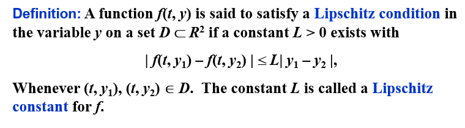
实际上，就是关于 \(y\) 的偏导数（如果可导）的上界
在 Lipschitz 条件下，初值问题的解是唯一的：
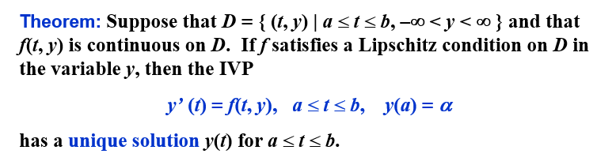
良态问题 | Well-Posed Problems¶
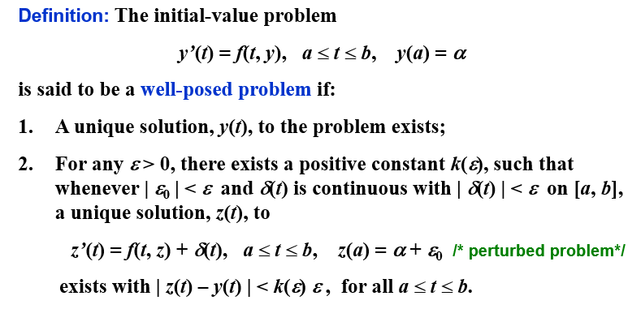
\(z(t)\) 那行的式子是原式的摄动问题（perturbed problem），即在原式的基础上加上一个扰动项（假定微分方程可能有误差\(\delta\)，或者初值有误差\(\epsilon\)）
在 Lipschitz 条件下，初值问题是良态的：

5.2 Euler 法 | Euler's Method¶
Euler 法的目的是获得如下形式的近似解：
得到的是一系列点的近似值。
Euler 法的思想是，用 \(f(t,y)\) 在 \((t_i,y_i)\) 处的线性近似值来代替 \(f(t,y)\)，即：
我们称其为差分方程（difference equation）
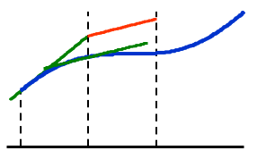
就是用一个点的导数值作为这个区间上的导数值
误差界¶
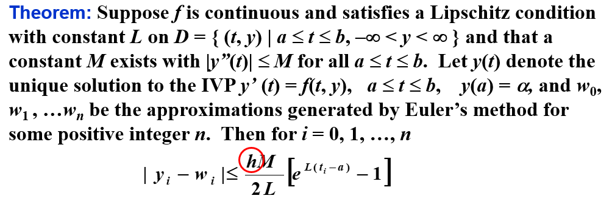
如果考虑每次计算中的舍入误差，则有
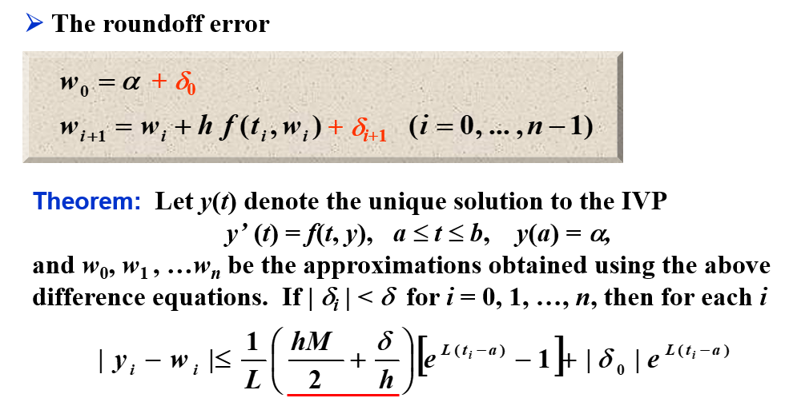
此时，往往有 \(h>\sqrt{2\delta /M}\)（\(\delta\) 通常很小），所以随着 \(h\) 的减小，误差会越来越小。（打勾函数的右沿）
其他 Euler 法¶
隐式欧拉法 | Implicit Euler Method¶
隐式欧拉法(implicit Euler method)，又称后退欧拉法，是按照隐式公式进行数值求解的方法。隐式公式不能直接求解，一般需要用欧拉显式公式得到初值，然后用欧拉隐式公式进行迭代求解。因此，隐式公式比显式公式计算复杂，但稳定性好。
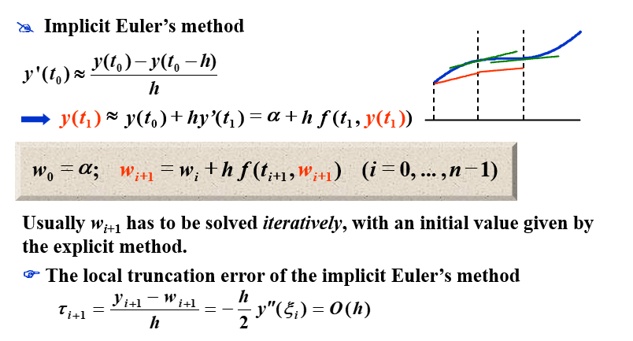
梯形法 | Trapezoidal Method¶
梯形法(trapezoidal method)是一种求解常微分方程初值问题的数值方法。它是欧拉法和隐式欧拉法的结合，是一种二阶方法。梯形法的基本思想是用 \(f(t_i,y_i)\) 和 \(f(t_{i+1},y_{i+1})\) 的平均值来代替 \(f(t,y)\)，即：
Note: The local truncation error is indeed \(O(h^2)\). However an implicit equation has to be solved iteratively.
双步法 | Double-step Method¶
双步法相较于之前的方法，需要两个初始值，即 \(w_0\) 和 \(w_1\)，然后用这两个初始值来计算 \(w_2\)，再用 \(w_1\) 和 \(w_2\) 来计算 \(w_3\)，以此类推。

对比¶

5.3 高阶 Taylor 法 | Higher-Order Taylor Methods¶
局部截断误差¶
局部截断误差只考虑一步的误差，即假设前面没有误差：
有局部截断误差
对于 Euler 法

Euler 法实际上就是高阶 Taylor 法的一阶近似。
高阶 Taylor 法¶
\(n\) 阶的 Taylor 法：
其局部截断误差为 \(O(h^{n})\)（如果 \(y\in C^{n+1}[a,b]\)）。
例子
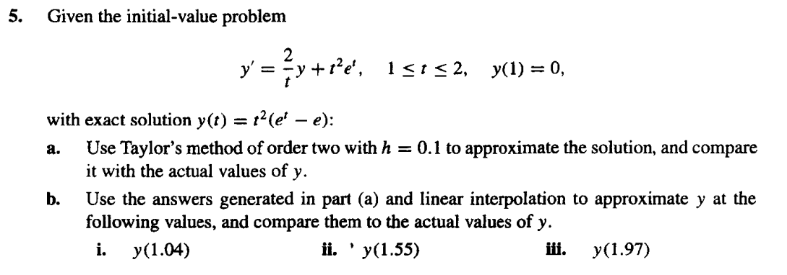
求 \(f(t,y(t))=\frac{2}{t}y(t)+t^2e^t\) 关于 \(t\) 的一阶导数
所以 \(w_{i+1}\) 的表达式为：
\(h=0.1\) 时：
| \(i\) | \(t_i\) | \(w_i\) | \(y(t_i)\) |
|---|---|---|---|
| 0 | 1.00 | 0.0000000 | 0.0000000 |
| 1 | 1.10 | 0.3397852 | 0.3459199 |
| 2 | 1.20 | 0.8521434 | 0.8666425 |
| 3 | 1.30 | 1.581770 | 1.607215 |
| 4 | 1.40 | 2.580997 | 2.620360 |
| 5 | 1.50 | 3.910985 | 3.967666 |
| 6 | 1.60 | 5.643081 | 5.720962 |
| 7 | 1.70 | 7.860382 | 7.963874 |
| 8 | 1.80 | 10.65951 | 10.79362 |
| 9 | 1.90 | 14.15268 | 14.32308 |
| 10 | 2.00 | 18.46999 | 18.68310 |
应用线性插值法，我们有
其精确值为：
5.4 Runge-Kutta 法 | Runge-Kutta Methods¶
泰勒方法需要计算 \(f(t,y)\) 的导数并求值，这是一个复杂、耗时的过程。Runge-Kutta 方法具有 Taylor 方法的高阶局部截断误差，但是不需要计算 \(f(t,y)\) 的导数。
二阶 Runge-Kutta 法 | Runge-Kutta method of order 2¶
我们考察改进欧拉法 \(K\) 前面的系数以及 \(K_2\) 的步长，使局部截断误差为 \(O(h^2)\)：

这有无穷多种可能，我们称其为 二阶 Runge-Kutta 方法（Runge-Kutta method of order 2）。
以下三个是二阶 Runge-Kutta 方法的特例
中点法 | Midpoint Method¶
改进欧拉法 | Modified Euler Method¶
是不是感觉和梯形法很像？
梯形法是用 \(f(t_i,w_i)\) 和 \(f(t_{i+1},w_{i+1})\) 的平均值来代替 \(f(t,y)\)，而改进欧拉法是用 \(f(t_i,w_i)\) 和 \(f(t_{i}+h,w_i+hK_1)\) 的平均值来代替 \(f(t,y)\)。区别在于前者是隐式的，后者是显式的。
Heun 法 | Heun's Method¶
高阶 Runge-Kutta 法 | Runge-Kutta methods of order \(m\)¶
Order 4-the most popular one
我们给出每步的求值次数和局部阶段误差的阶之间的关系：

这说明了为什么人们更喜欢使用具有较小步长的小于 5 阶的 Runge-Kutta 方法。
因为 Runge-Kutta 方法是基于 Taylor 展开的，所以 y 必须足够平滑，才能获得更高阶方法的更高精度。通常情况下，人们更喜欢使用较小步长的低阶方法，而不是使用较大步长的高阶方法。
如果 \(y\) 不够光滑，那么高阶的 Runge-Kutta 方法也不会有很好的效果，所以一般会用低阶的 Runge-Kutta 方法，但是步长会更小
5.6 多步法 | Multistep Methods¶
在一些网格点（mesh points）上使用 \(y\) 和 \(y'\) 的线性组合来更好地近似 \(y(t_{i+1})\)
求解初值问题
的 \(m\) 步多步法（\(m\)-step multistep method）的一般形式为
其中 \(h=(b-a)/N\)，给定 \(m\) 个初始值 \(w_0,w_1,...,w_{m-1}\)，\(a_0,a_1,...,a_{m-1}\) 和 \(b_0,b_1,...,b_m\) 是常数。
\(b_m=0\) 的方法称为显式（explicit）；\(b_m\neq 0\) 的方法称为隐式（implicit）
局部截断误差（local truncation error）为
Adams-Bashforth 显式 m 步方法 | Adams-Bashforth explicit m-step technique¶
注意到
为了推导 Adams-Bashforth 显式 m 步方法，我们通过\((t_i,f(t_i,y(t_i)))\)，\((t_{i-1},f(t_{i-1},y(t_{i-1})))\)，\((t_{i-2},f(t_{i-2},y(t_{i-2})))\)，...，\((t_{i+1-m},f(t_{i+1-m},y(t_{i+1-m})))\) 形成向后差分多项式 \(P_{m-1}(t)\)，然后用 \(P_{m-1}(t)\) 来代替 \(f(t,y(t))\)，从而得到
向后差分多项式
其中 \(R_{m-1}(t)\) 是余项，也就是截断误差。
我们有
其局部截断误差为
\((-1)^k\int_{0}^{1}\begin{pmatrix}-s\\k\end{pmatrix}ds\)
| \(k\) | \((-1)^k\int_{0}^{1}\begin{pmatrix}-s\\k\end{pmatrix}ds\) |
|---|---|
| \(0\) | \(1\) |
| \(1\) | \(\frac{1}{2}\) |
| \(2\) | \(\frac{5}{12}\) |
| \(3\) | \(\frac{3}{8}\) |
| \(4\) | \(\frac{251}{720}\) |
| \(5\) | \(\frac{95}{288}\) |
2步
取 \(m=2\)，我们有
因为 \(y_{i+1}=y_i+h[{\color{red}{b_m}}f(t_{i+1},w_{i+1})+{\color{red}{b_{m-1}}}f(t_i,w_i)+...+{\color{red}{b_0}}f(t_{i+1-m},w_{i+1-m})]+\int_{t_i}^{t_{i+1}}R_{m-1}(t)dt\)，所以
其局部截断误差为
| \(m\) | \(f_i\) | \(f_{i-1}\) | \(f_{i-2}\) | \(f_{i-3}\) |
|---|---|---|---|---|
| \(1\) | \(1\) | \(-\) | \(-\) | \(-\) |
| \(2\) | \(\frac{3}{2}\) | \(-\frac{1}{2}\) | \(-\) | \(-\) |
| \(3\) | \(\frac{23}{12}\) | \(-\frac{4}{3}\) | \(\frac{5}{12}\) | \(-\) |
| \(4\) | \(\frac{55}{24}\) | \(-\frac{59}{24}\) | \(\frac{37}{24}\) | \(-\frac{3}{8}\) |
查表可得，Adams-Bashforth 显式 4 步方法的为
Adams-Moulton 隐式 m 步方法 | Adams-Moulton implicit m-step technique¶
同样的，我们采用向前差分多项式，可以得到 Adams-Moulton 隐式 m 步方法：
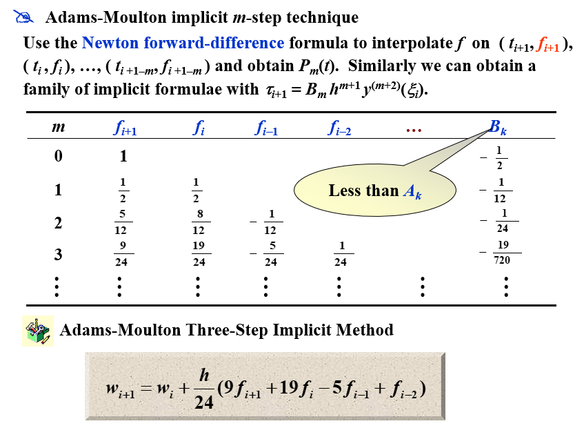
Adams 预测-校正系统 | Adams predictor-corrector system¶
Adams 预测-校正系统是 Adams-Bashforth 显式 m 步方法和 Adams-Moulton 隐式 m 步方法的结合：
- 用 Runge-Kutta 法计算出 \(m\) 个初始值 \(w_0,w_1,...,w_{m-1}\) （如果初值的个数不够）
- 预测：用 Adams-Bashforth 显式 m 步方法计算出 \(w_m,w_{m+1},...\) 直到 \(w_{N-1}\)
- 校正：用 Adams-Moulton 隐式 m 步方法计算出 \(w_m,w_{m+1},...\) 直到 \(w_{N-1}\)
在这三步中使用的所有公式的局部截断误差的阶必须相同。
最常用的系统是以 4 阶 Adams-Bashforth 方法作为预测器，以 Adams-Moulton 方法的一次迭代作为校正器，其起始值来自 4 阶 Runge-Kutta 方法。
宏观角度：Taylor 展开¶

通过对比系数，可以有一族解。
通过对这个解的再限制（添加两个条件），我们可以得到多种方法。

5.9 高阶方程和微分方程组 | Higher-Order Equations and Systems of Differential Equations¶
微分方程组的矩阵形式¶
对 \(m\) 阶微分方程组：
给定 \(m\) 个初始值 \(u_1(a),u_2(a),...,u_m(a)\)，我们可以用 \(m\) 步的 Runge-Kutta 法来求解。
用矩阵的形式可以记作
高阶微分方程的转化¶
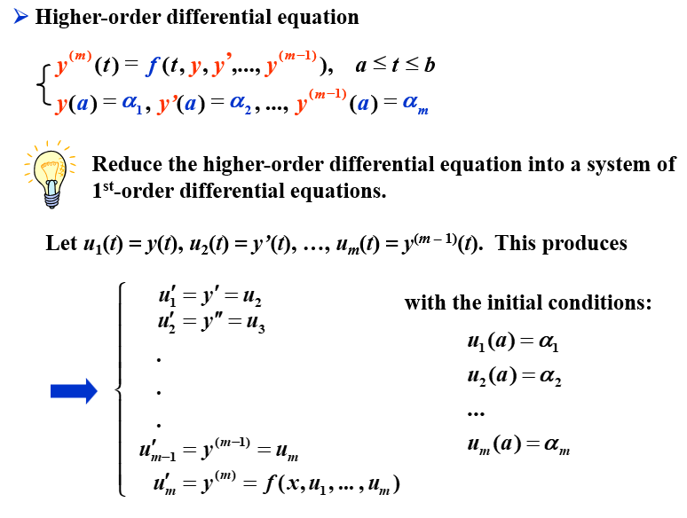
例题
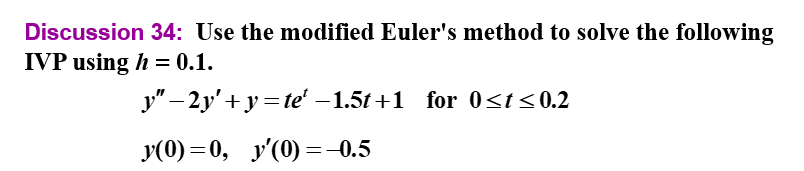
modified Euler's method
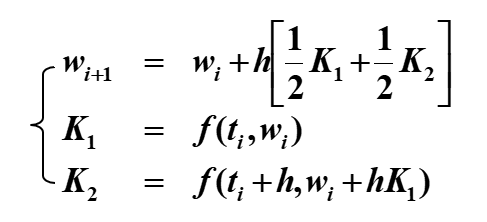
第一次迭代：

第二次迭代：
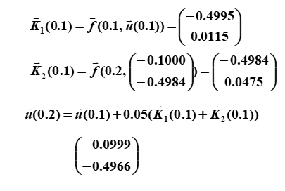
5.10 稳定性 | Stability¶
相容 | Consistency¶

注意到这个定义是在局部上的定义
收敛 | Convergence¶

这是对整体而言
稳定性 | Stability¶
除了这两个概念，我们还需要一个概念：稳定性。如果初始条件的小变化或扰动会导致后续近似值的相应小变化，则该方法被称为稳定。
特征方程与稳定性¶
已知方程
我们给出一个相关的多项式，称为特征多项式（characteristic polynomial）：
- 如果 \(P(\lambda)\) 的所有根的模都小于等于 1，且取等时为单根，则称该方法满足根条件（root condition）
- 如果有且仅有一个根的模等于 1，则该方法是强稳定（strongly stable）的
- 如果有多个根的模等于 1，则该方法是弱稳定（weakly stable）的
- 如果方法不满足根条件，则该方法是不稳定的
测试方程 | Test Equation¶
我们将一个特定的方法应用于一个简单的测试方程：
假设舍入误差只在初始点引入。如果这个初始误差会在某个步长 \(h\) 下减小，那么这个方法就被称为绝对稳定（absolutely stable），此时 \(H = \lambda h\)。所有这样的 \(H\) 的集合构成了绝对稳定域（region of absolute stability）。
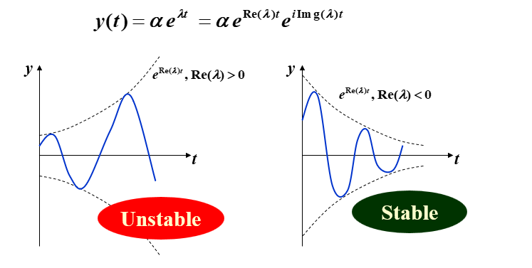
如果方法 A 的绝对稳定域比方法 B 的大，那么方法 A 就比方法 B 更稳定
显式 Euler 法的稳定性¶
在显式 Euler 法中，我们有
在这个测试方程中，我们有
我们给初值加上一个扰动项 \(\epsilon\)，即 \(\alpha^*=\alpha+\epsilon\)，则
所以
要确保稳定性，我们需要 \(|(1+H)^{i+1}|<1\)，即 \(|1+H|<1\)。
隐式 Euler 法的稳定性¶
在隐式 Euler 法中，我们有
在这个测试方程中，我们有
所以
我们给初值加上一个扰动项 \(\epsilon\)，即 \(\alpha^*=\alpha+\epsilon\)，则
所以
要确保稳定性，我们需要 \(|(\frac{1}{1-H})^{i+1}|<1\)，即 \(|\frac{1}{1-H}|<1\)。
二阶 隐式 Runge-Kutta 法的稳定性¶
在二阶 隐式 Runge-Kutta 法中，我们有
在这个测试方程中，我们有
我们给初值加上一个扰动项 \(\epsilon\)，即 \(\alpha^*=\alpha+\epsilon\)，则
所以
要确保稳定性，我们需要 \(|\frac{2+H}{2-H}|<1\)。
四阶 显式 Runge-Kutta 法的稳定性¶
在四阶 显式 Runge-Kutta 法中，我们有
在这个测试方程中，我们有
我们给初值加上一个扰动项 \(\epsilon\)，即 \(\alpha^*=\alpha+\epsilon\)，则
所以
要确保稳定性，我们需要 \(|1+H+\frac{1}{2}H^2+\frac{1}{6}H^3+\frac{1}{24}H^4|<1\)。
微分方程组¶
考虑一个微分方程组
应用欧拉显式法，我们该如何选择步长 \(h\) 才能保证稳定性？
我们将条件改写为矩阵形式：
应用欧拉显式法，我们有
记 \(\mathbf{A}=\begin{pmatrix}9&24\\-24&-51\end{pmatrix}\)，则
我们给初值加上一个扰动项 \(\epsilon_0\) 和 \(\mu_0\)，即 \(\mathbf{u}^*_0=\mathbf{u}_0+\begin{pmatrix}\epsilon_0\\\mu_0\end{pmatrix}\)，则
上面两个式子相减，我们有
所以
要确保稳定性，我们需要 \(|(\mathbf{I}+h\mathbf{A})^{i+1}|<1\)。
也就是说，我们需要 \(|1+h\lambda|<1\Leftrightarrow -2<h\lambda<0\)，其中 \(\lambda\) 是 \(\mathbf{A}\) 的特征值。
我们求解 \(\mathbf{A}\) 的特征值，得到 \(\lambda_1=-3\) 和 \(\lambda_2=-39\)。
所以，我们需要 \(-2<h\lambda_1<0\Leftrightarrow \frac23>h>0\) 和 \(-2<h\lambda_2<0\Leftrightarrow \frac{2}{39}>h>0\)。
所以，我们需要 \(0<h<\frac{2}{39}\)。
Chapter 6 解线性方程组的直接法 | Direct Methods for Solving Linear Systems¶
6.1 回代的Gauss消去法 | Gaussian elimination with backward substitution¶
算法内容¶
解方程组\(\mathbf{A}\vec{x}=\vec{b}\)，记\(\mathbf{A}^{(1)}=\mathbf{A}=a_{ij}^{(1)}\)，\(\vec{b}^{(1)}=\vec{b}=\begin{pmatrix}b_{1}^{(1)}\\b_{2}^{(1)}\\\vdots\\b_{n}^{(1)}\end{pmatrix}\)，\(\vec{x}^{(1)}=\vec{x}=\begin{pmatrix}x_{1}^{(1)}\\x_{2}^{(1)}\\\vdots\\x_{n}^{(1)}\end{pmatrix}\)，则增广矩阵\(\tilde{\mathbf{A}}\)为：
通过高斯消元我们可以得到新的增广矩阵\(\tilde{\mathbf{A}}^{(k)}\)：
第\(1\)次迭代过程为：如果 \(a_{11}^{(1)}\neq 0\) ，记 \(m_{i1}= {a_{i1}^{(1)}}/{a_{11}^{(1)}}\) ，则
第\(t\)次迭代过程为：如果\(a_{tt}^{(t)}\neq 0\)，记 \(m_{it}={a_{it}^{(t)}}/{a_{tt}^{(t)}}\) ，则
如果\(a_{tt}^{(t)}=0\)，则交换第\(t\)行与第\(k\)行，使得\(a_{kk}^{(k)}\neq 0\)，然后再进行第\(k\)次迭代。如果找不到\(a_{kk}^{(k)}\neq 0\)，则方程组没有唯一解，算法停止。
写成伪代码如下：

计算次数¶
由于在计算机上完成乘法或除法所需的时间大致相同，且大于完成加法或减法所需的时间，所以我们分开考虑乘法和除法的计算次数。
对上述算法进行分析，可以得到计算次数如下：
消元过程¶
在每个 \(i\) 中，
Step 5需要完成 \(n-i\) 次除法，Step 6由 \(E_j-m_{ji}E_i\) 代替方程 \(E_j\) 的过程中，对每个 \(j\) ，需要完成 \(n-i+1\) 次乘法和 \(n-i+1\) 次减法。所以共需要完成 \((n-i)(n-i+1)\) 次乘法和 \((n-i)(n-i+1)\) 次减法。
所以，消元过程共需要完成 \(\sum\limits_{i=1}^{n-1}((n-i)+(n-i)(n-i+1))\) 次乘法/除法和 \(\sum\limits_{i=1}^{n-1}(n-i)(n-i+1)\) 次加法/减法。
即消元过程共需要完成 \(\frac{1}{3}n^3+\frac{1}{2}n^2-\frac{5}{6}n\) 次乘法/除法和 \(\frac{1}{3}n^3-\frac{1}{3}n\) 次加法/减法。
回代过程¶
Step 8 需要完成 \(1\) 次除法。
在每个 \(i\) 中，
Step 9需要完成 \(n-i\) 次乘法和 \(n-i-1\) 次加法（对每个相加项），然后是一次减法和一次除法。
所以，回代过程共需要完成 \(1+\sum\limits_{i=1}^{n-1}((n-i)+1)\) 次乘法/除法和 \(\sum\limits_{i=1}^{n-1}(n-i)\) 次加法/减法。
即回代过程共需要完成 \(\frac{1}{2}n^2+\frac{1}{2}n\) 次乘法/除法和 \(\frac{1}{2}n^2-\frac{1}{2}n\) 次加法/减法。
总计算次数¶
乘法/除法：
加法/减法：
从这里我们可以得知，高斯消元法的算法复杂度为\(O(N^3)\)
6.2 选主元策略 | Pivoting Strategies¶
在上个算法中，我们观察到，如果与\(a_{jk}^{(k)}\)相比，\(|a_{kk}^{(k)}|\)很小，那么乘数\(m_{ik}^{(k)}=\frac{a_{ik}^{(k)}}{a_{kk}^{(k)}}\)就会很大，这样就会导致误差的积累。而且在代换时，\(x_{k}^{(k)}\)的值也会很大，这样就会导致误差的积累。所以我们需要选取一个合适的主元，使得误差的积累最小。
部分主元选取策略 | Partial Pivoting¶
我们考虑选择一个比较大的元素作为主元，这样就可以减小误差的积累。
所以我们可以在每次迭代时，从第\(k\)行开始，选取该列中绝对值最大的元素作为主元，然后再进行消元。
伪代码如下：


比例因子选取策略 | Scaling Partial Pivoting¶
这个方法通过比较"每一行的元素都除以该行的最大元素的绝对值"，然后通过这个结果进行部分主元选取策略，再对原方程组部分进行行交换，从而选取主元。
这里的比例因子就是每一行的最大元素的绝对值，即
比例因子只在初始过程中计算一次，然后在每次迭代过程中，比例因子也需要参与交换。
伪代码与部分主元策略的差别如下：

全主元选取策略 | Complete Pivoting¶
上个算法中，比例因子只在初始过程中计算一次。如果考虑到过程被修改，使得每次作行变换的决定时，要确定新的比例因子，那这种方法就是全主元选取策略(Complete Pivoting)。
6.5 矩阵分解 | Matrix Factorization¶
LU分解 | LU Factorization¶
假设Gauss消去法在此次解方程后没有进行行交换，Gauss消去法的第一步是对\(j=2,3,\cdots,n\)行进行计算：
那我们可以把这个过程写成矩阵的形式：
记最左边的矩阵为\(\mathbf{M}^{(1)}\)，中间的矩阵为\(\mathbf{A}^{(1)}\)，右边的矩阵为\(\mathbf{A}^{(2)}\)，则有\(\mathbf{M}^{(1)}\mathbf{A}^{(1)}=\mathbf{A}^{(2)}\)。
这里的\(\mathbf{M}^{(1)}\)称作第一Gauss交换矩阵（first Gauss transformation matrix）。
用\(\mathbf{b}^{(2)}\)表示\(\mathbf{b^{(1)}}\)经过第一次Gauss消去法后的结果，则有\(\mathbf{A}^{(2)}\mathbf{x}=\mathbf{M}^{(1)}\mathbf{A}^{(1)}\mathbf{x}=\mathbf{M}^{(1)}\mathbf{b}^{(1)}=\mathbf{b}^{(2)}\)。
一般的，如果\(\mathbf{A}^{(k)}\mathbf{x}=\mathbf{b}^{(k)}\)已经构建，则由第\(k\)个Gauss变换矩阵：
则有\(\mathbf{A}^{(k+1)}\mathbf{x}=\mathbf{M}^{(k)}\mathbf{A}^{(k)}\mathbf{x}=\mathbf{M}^{(k)}\mathbf{b}^{(k)}=\mathbf{b}^{(k+1)}\)。
这个过程结束在第\(\mathbf{A}^{(n)}\mathbf{x}=\mathbf{b}^{(n)}\)，这里的\(\mathbf{A}^{(n)}=\mathbf{M}^{(n-1)}\mathbf{A}^{(n-2)}=\cdots=\mathbf{M}^{(n-1)}\mathbf{M}^{(n-2)}\cdots\mathbf{M}^{(1)}\mathbf{A}^{(1)}\)。由高斯消元法知道，\(\mathbf{A}^{(n)}\)是一个上三角矩阵。
此过程就形成了\(\mathbf{A}=\mathbf{L}\mathbf{U}\)的分解中的\(\mathbf{U}\)部分，而\(\mathbf{L}\)部分就是上文\(\mathbf{A}\)左侧矩阵的逆矩阵，即(\(\mathbf{M}^{(n-1)}\mathbf{M}^{(n-2)}\cdots\mathbf{M}^{(1)})^{-1}=\mathbf{M}^{(1)^{-1}}\mathbf{M}^{(2)^{-1}}\cdots\mathbf{M}^{(n-1)^{-1}}\)。
因为\(\mathbf{M}^{(k)}\)的逆矩阵就是把对角线下方的元素取反，所以\(\mathbf{L}\)的元素为：
所以
由此我们可以得到：
如果Gauss消去法在线性方程组\(\mathbf{A}\vec{x}=\vec{b}\)中没有进行行交换，则\(\mathbf{A}=\mathbf{L}\mathbf{U}\)， 其中
如果\(L\)是单位下三角矩阵，则这个分解是唯一的。
用反证法。
如果\(\mathbf{A}=\mathbf{L}_1\mathbf{U}_1=\mathbf{L}_2\mathbf{U}_2\)，其中\(\mathbf{L}_1\)和\(\mathbf{L}_2\)是单位下三角矩阵，\(\mathbf{U}_1\)和\(\mathbf{U}_2\)是上三角矩阵。则有
因为上三角阵的逆依然是上三角阵，下三角阵同理。所以等式左右分别为上三角阵和下三角阵。又因为\(\mathbf{L_1}^{-1}\mathbf{L_2}\)的对角线上的元素均为\(1\)，所以两式相等当且仅当
即\(\mathbf{U_1}=\mathbf{U_2}\)，\(\mathbf{L_1}=\mathbf{L_2}\)。
所以这个分解是唯一的。
伪代码¶
先进行LU分解。


解第一个方程\(\mathbf{L}\vec{y}=\vec{b}\)。

解第二个方程\(\mathbf{U}\vec{x}=\vec{y}\)。

6.6 特殊类型的矩阵 | Special Types of Matrices¶
严格对角占优矩阵 | Strictly Diagonally Dominant Matrices¶
如果对矩阵\(\mathbf{A}\)的每一行，对角线上的元素的绝对值大于该行上其他元素的绝对值之和，则称\(\mathbf{A}\)为严格对角占优矩阵。
定理：严格对角占优矩阵是非奇异的。而且，在此情况下，Gauss消去法可用在形如\(\mathbf{A}\vec{x}=\vec{b}\)的方程组中以得到唯一解，而且不需要进行或列交换，并且对于舍入误差的增长而言计算是稳定的。
正定矩阵 | Positive Definite Matrices¶
本书中的正定矩阵是指对称正定矩阵，与其他书中的定义不同。
一个矩阵\(\mathbf{A}\)是正定的，如果它是对称的，并且对于所有非零向量\(\vec{x}\)，都有\(\vec{x}^T\mathbf{A}\vec{x}>0\)。
定理
如果\(\mathbf{A}\)是\(n\times n\)的正定矩阵，则
a. \(\mathbf{A}\)是非奇异的。
b. \(a_{ii}>0\)，\(i=1,2,\cdots,n\)。
c. \(\max\limits_{1\leq k,j\leq n}|a_{kj}|<\max\limits_{1\leq i\leq n}|a_{ii}|\)，其中 \(k\neq j\)。
d. \((a_{ij})^2<a_{ii}a_{jj}\)，\(i\neq j\)。
重要结论：如果\(\mathbf{A}\)是正定的，则\(\mathbf{A}\)的所有主子式都是正的。
\(\mathbf{A}=\mathbf{L}\mathbf{D}\mathbf{L}^T\)分解¶
我们可以把\(\mathbf{A}=\mathbf{L}\mathbf{U}\)中的\(\mathbf{U}\)进一步分解为对角矩阵\(\mathbf{D}\)和单位上三角矩阵\(\widetilde{\mathbf{U}}\)，如下图所示：

我们知道，\(\mathbf{A}\)是对称的，所以\(\mathbf{A}=\mathbf{A}^T\)，即\(\mathbf{L}\mathbf{U}=\mathbf{L}\mathbf{D}\widetilde{\mathbf{U}}=\widetilde{\mathbf{U}}^T\mathbf{D}\mathbf{L}^T\)，所以可以有\(\mathbf{L}=\widetilde{\mathbf{U}}^T\)，所以\(\mathbf{A}=\mathbf{L}\mathbf{D}\mathbf{L}^T\)。其中\(\mathbf{L}\)是一个主对角线为1的下三角矩阵，\(\mathbf{D}\)是对角线元素为正值的对角矩阵。
伪代码如下：

Cholesky分解¶

取\(\widetilde{\mathbf{L}}=\mathbf{L}\mathbf{D}^{\frac{1}{2}}\)，则有\(\mathbf{A}=\widetilde{\mathbf{L}}\widetilde{\mathbf{L}}^T\)。其中\(\widetilde{\mathbf{L}}\)是一个具有非零对角线元素的下三角矩阵。
伪代码如下：


三对角矩阵 | Tridiagonal Matrices¶
三对角矩阵是指除了对角线和对角线上方和下方的第一条对角线外，其他元素均为0的矩阵，形式如下：
定理：假设\(\mathbf{A}\)是三对角矩阵，对每个\(i=2,3,\cdots,n-1\)，有\(a_{i,i-1}a_{i,i+1}\neq 0\)，如果\(|a_{11}|>|a_{12}|\)，\(|a_{ii}|>|a_{i,i-1}|+|a_{i,i+1}|\)，\(|a_{nn}|>|a_{n,n-1}|\)，则\(\mathbf{A}\)是非奇异的，且在Crout分解中，\(l_{ii}\)的值都是非零的。
Crout分解¶
Crout分解是LU分解的一种特殊情况，我们可以求出具有形式
的三对角矩阵\(\mathbf{A}\)的分解。
通过矩阵乘法，我们可以得到：
在求解部分，我们可以先解\(\mathbf{L}\mathbf{z}=\mathbf{b}\)，然后再解\(\mathbf{U}\mathbf{x}=\mathbf{z}\)。有伪代码：

Chapter 7 矩阵代数中的迭代方法 | Iterative Techniques in Matrix Algebra¶
7.1 向量和矩阵范数 | Norms of Vectors and Matrices¶
向量范数¶
\(\mathbf{R}^n\)上的向量范数是一个函数\(\|\cdot\|:\mathbf{R}^n\rightarrow\mathbf{R}\)，满足下列条件：
- \(\|\mathbf{x}\|\geq 0\)，且\(\|\mathbf{x}\|=0\)当且仅当\(\mathbf{x}=\mathbf{0}\)；(\(\mathbf{x}\in\mathbf{R}^n\))
- \(\|\alpha\mathbf{x}\|=|\alpha|\|\mathbf{x}\|\)，其中\(\alpha\in\mathbf{R},\mathbf{x}\in\mathbf{R}^n\)；
- \(\|\mathbf{x}+\mathbf{y}\|\leq\|\mathbf{x}\|+\|\mathbf{y}\|\)。(\(\mathbf{x},\mathbf{y}\in\mathbf{R}^n\))
常用的向量范数有：
- \(p\)-范数：\(\|\mathbf{x}\|_p=(\sum\limits_{i=1}^n|x_i|^p)^{1/p}\)，其中\(p\geq 1\)；
- 无穷范数：\(\|\mathbf{x}\|_\infty=\max_{1\leq i\leq n}|x_i|\)；
向量的收敛性¶
\(\mathbf{R}^n\)上的向量序列\(\{\mathbf{x}^{(k)}\}_{k=1}^\infty\)按照向量范数\(\|\cdot\|\)收敛到向量\(\mathbf{x}\)，当且仅当对于任意的\(\epsilon>0\)，存在整数\(N(\epsilon)\)，使得当\(k>N(\epsilon)\)时，有\(\|\mathbf{x}^{(k)}-\mathbf{x}\|<\epsilon\)。
对于无穷范数，如果向量序列\(\{\mathbf{x}^{(k)}\}_{k=1}^\infty\)按照无穷范数\(\|\cdot\|_\infty\)收敛到向量\(\mathbf{x}\)，当且仅当对于任意\(i=1,2,\cdots,n\)，有\(\lim_{k\rightarrow\infty}x_i^{(k)}=x_i\)。
范数的等价性¶
等价性定义：\(\mathbf{R}^n\)上的向量范数\(\|\cdot\|\)和\(\|\cdot\|'\)等价，当且仅当存在正常数\(c_1,c_2\)，使得对于任意的\(\mathbf{x}\in\mathbf{R}^n\)，有\(c_1\|\mathbf{x}\|\leq\|\mathbf{x}\|'\leq c_2\|\mathbf{x}\|\)。
实际上，\(\mathbf{R}^n\)上的所有范数都是等价的。也就是说，如果\(\|\cdot\|\)和\(\|\cdot\|'\)是\(\mathbf{R}^n\)上的任意两个范数，并且\(\{\mathbf{x}^{(k)}\}_{k=1}^\infty\)按照\(\|\cdot\|\)收敛到\(\mathbf{x}\)，那么\(\{\mathbf{x}^{(k)}\}_{k=1}^\infty\)也按照\(\|\cdot\|'\)收敛到\(\mathbf{x}\)。
我们接下来证明对于范数\(\|\cdot\|_2\)和\(\|\cdot\|_\infty\)，它们是等价的。
\(\|\cdot\|_2\)和\(\|\cdot\|_\infty\)的等价性
设\(\|\mathbf{x}\|_\infty=\max\limits_{1\leq i\leq n}|x_i|=|x_j|\)。那么
并且
所以\(\|\mathbf{x}\|_\infty\leq\|\mathbf{x}\|_2\leq\sqrt{n}\|\mathbf{x}\|_\infty\)，即\(\|\cdot\|_2\)和\(\|\cdot\|_\infty\)是等价的。
矩阵范数¶
\(\mathbf{R}^{n\times n}\)上的矩阵范数是一个函数\(\|\cdot\|:\mathbf{R}^{n\times n}\rightarrow\mathbf{R}\)，满足下列条件：
- \(\|\mathbf{A}\|\geq 0\)，且\(\|\mathbf{A}\|=0\)当且仅当\(\mathbf{A}\)是零矩阵；(\(\mathbf{A}\in\mathbf{R}^{n\times n}\))
- \(\|\alpha\mathbf{A}\|=|\alpha|\|\mathbf{A}\|\)，其中\(\alpha\in\mathbf{R},\mathbf{A}\in\mathbf{R}^{n\times n}\)；
- \(\|\mathbf{A}+\mathbf{B}\|\leq\|\mathbf{A}\|+\|\mathbf{B}\|\)。(\(\mathbf{A},\mathbf{B}\in\mathbf{R}^{n\times n}\))
- \(\|\mathbf{AB}\|\leq\|\mathbf{A}\|\|\mathbf{B}\|\)。(\(\mathbf{A},\mathbf{B}\in\mathbf{R}^{n\times n}\))
矩阵\(\mathbf{A}\)和\(\mathbf{B}\)之间的距离定义为\(\|\mathbf{A}-\mathbf{B}\|\)。
Frobenius范数¶
\(\mathbf{A}\in\mathbf{R}^{n\times n}\)的Frobenius范数是\(\mathbf{A}\)的所有元素的平方和的平方根，即\(\|\mathbf{A}\|_F=\sqrt{\sum\limits_{i=1}^n\sum\limits_{j=1}^na_{ij}^2}\)。
自然矩阵范数 | Natural Matrix Norm¶
如果\(\|\cdot\|\)是\(\mathbf{R}^{n\times n}\)上的向量范数，那么\(\|\mathbf{A}\|=\max\limits_{\|\mathbf{x}\|=1}\|\mathbf{Ax}\|\)是\(\mathbf{R}^{n\times n}\)上的矩阵范数,称为与向量范数\(\|\cdot\|\)相关的自然矩阵范数。
\(\|\mathbf{A}\|=\max\limits_{\|\mathbf{x}\|=1}\|\mathbf{Ax}\|\)也可以写成\(\|\mathbf{A}\|=\max\limits_{\mathbf{x}\neq\mathbf{0}}\frac{\|\mathbf{Ax}\|}{\|\mathbf{x}\|}\)。
常用的自然矩阵范数(Natural Norm)有：
- \(p\)-范数：\(\|\mathbf{A}\|_p=\max\limits_{\mathbf{x}\neq\mathbf{0}}\frac{\|\mathbf{Ax}\|_p}{\|\mathbf{x}\|_p}\)，其中\(p\geq 1\)；
- 无穷范数：\(\|\mathbf{A}\|_\infty=\max\limits_{1\leq i\leq n}\sum\limits_{j=1}^n|a_{ij}|\)；也就是\(\mathbf{A}\)的所有行和的最大值；
- \(1\)-范数：\(\|\mathbf{A}\|_1=\max\limits_{1\leq j\leq n}\sum\limits_{i=1}^n|a_{ij}|\)；也就是\(\mathbf{A}\)的所有列和的最大值；
- \(2\)-范数(spectral norm)：\(\|\mathbf{A}\|_2=\sqrt{\lambda_{\max}(\mathbf{A}^T\mathbf{A})}\)，其中\(\lambda_{\max}(\mathbf{A}^T\mathbf{A})\)是\(\mathbf{A}^T\mathbf{A}\)的最大特征值。
推论
根据 \(p\)-范数的定义，我们可以得到：对于任意非零向量 \(\mathbf{z}\) 和矩阵 \(\mathbf{A}\) 和任意一个自然范数 \(\|\cdot\|\)，有
即
7.2 特征值与特征向量 | Eigenvalues and Eigenvectors¶
谱半径 | Spectral Radius¶
\(\mathbf{A}\in\mathbf{R}^{n\times n}\)的谱半径定义为\(\rho(\mathbf{A})=\max\limits_{1\leq i\leq n}|\lambda_i|\)，其中\(\lambda_i\)是\(\mathbf{A}\)的特征值，这里的特征值可以是复数。
\(\rho(\mathbf{A})=\max\{1,|1+\sqrt{3}i|,|1-\sqrt{3}i|\}=\max\{1,2,2\}=2\)。
对于任意一个自然范数\(\|\cdot\|\)，有\(\rho(\mathbf{A})\leq\|\mathbf{A}\|\)。
矩阵的收敛性¶
当满足以下条件时，矩阵\(\mathbf{A}\in\mathbf{R}^{n\times n}\)是收敛的：
以下命题是等价的：
- 矩阵\(\mathbf{A}\in\mathbf{R}^{n\times n}\)是收敛的；
- \(\rho(\mathbf{A})<1\)；
- 对于某些自然范数\(\|\cdot\|\)，有\(\lim\limits_{k\rightarrow\infty}\|\mathbf{A}^k\|=0\)。
- 对于任意的自然范数\(\|\cdot\|\)，有\(\lim\limits_{k\rightarrow\infty}\|\mathbf{A}^k\|=0\)。
- 对于每一个\(\mathbf{x}\in\mathbf{R}^n\)，有\(\lim\limits_{k\rightarrow\infty}\mathbf{A}^k\mathbf{x}=\mathbf{0}\)。
7.3 求解线性方程组的迭代法 | Iterative Techniques for Solving Linear Systems¶
Jacobi迭代法¶
记矩阵\(\mathbf{A}\in\mathbf{R}^{n\times n}\)的下三角部分为\(-\mathbf{L}\)，上三角部分为\(-\mathbf{U}\)，对角线部分为\(\mathbf{D}\)，即\(\mathbf{A}=\mathbf{D}-\mathbf{L}-\mathbf{U}\)。
所以方程组\(\mathbf{Ax}=\mathbf{b}\)可以写成\(\mathbf{Dx}=(\mathbf{L}+\mathbf{U})\mathbf{x}+\mathbf{b}\)。
即\(\mathbf{x}=\mathbf{D}^{-1}(\mathbf{L}+\mathbf{U})\mathbf{x}+\mathbf{D}^{-1}\mathbf{b}\)。
引入符号\(\mathbf{T}_j=\mathbf{D}^{-1}(\mathbf{L}+\mathbf{U})\)，\(\mathbf{c}_j=\mathbf{D}^{-1}\mathbf{b}\)，则\(\mathbf{x}=\mathbf{T}_j\mathbf{x}+\mathbf{c}_j\)。
Jacobi迭代法的迭代格式为：
其伪代码为：

Gauss-Seidel迭代法¶
我们可以改进Jacobi迭代法，使得每次迭代时，都使用已经算出来的\(\mathbf{x}^{(k)}\)的元素来计算\(\mathbf{x}^{(k)}\)之后的元素。如下图所示：

也就是说，可以使用：
来计算\(x_i^{(k)}\)。
结合之前\(\mathbf{D}\)，\(\mathbf{L}\)，\(\mathbf{U}\)的定义，我们可以得到：
即：
引入符号\(\mathbf{T}_{g}=(\mathbf{D}-\mathbf{L})^{-1}\mathbf{U}\)，\(\mathbf{c}_{g}=(\mathbf{D}-\mathbf{L})^{-1}\mathbf{b}\)，则\(\mathbf{x}=\mathbf{T}_{g}\mathbf{x}^{(k-1)}+\mathbf{c}_{g}\)。
Gauss-Seidel迭代法的迭代格式为：
其伪代码为：

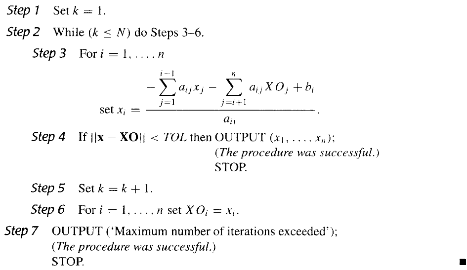
两种迭代法的收敛性¶
对于任意一个\(\mathbf{x}^{(0)}\in\mathbf{R}^n\)，由
定义的序列 \(\{\mathbf{x}^{(k)}\}_{k=0}^\infty\) 收敛到\(\mathbf{x}=\mathbf{Tx}+\mathbf{c}\)的唯一解，当且仅当\(\rho(\mathbf{T})<1\)。
证明
\(\Leftarrow\)：
设\(\rho(\mathbf{T})<1\)，那么
由于\(\rho(\mathbf{T})<1\)，所以矩阵\(\mathbf{T}\)是收敛的，且\(\lim\limits_{k\rightarrow\infty}\mathbf{T}^k\mathbf{x}^{(0)}=\mathbf{0}\)
由于\(\lim\limits_{k\rightarrow\infty}(\mathbf{T}^{k-1}+\mathbf{T}^{k-2}+\cdots+\mathbf{T}+\mathbf{I})\mathbf{c}=(\mathbf{I}-\mathbf{T})^{-1}\mathbf{c}\)，所以\(\lim\limits_{k\rightarrow\infty}\mathbf{x}^{(k)}=(\mathbf{I}-\mathbf{T})^{-1}\mathbf{c}=\mathbf{x}\)，这里的\(\mathbf{x}\)就是\(\mathbf{x}=\mathbf{Tx}+\mathbf{c}\)的唯一解。
\(\Rightarrow\)：
设\(\{\mathbf{x}^{(k)}\}_{k=0}^\infty\)收敛到\(\mathbf{x}=\mathbf{Tx}+\mathbf{c}\)的唯一解，取任意一个向量\(\mathbf{y}\in\mathbf{R}^n\)，定义\(\mathbf{x}^{(0)}=\mathbf{x}-\mathbf{y}\)，那么
所以
因此
由于\(\mathbf{y}\)是任意的，根据矩阵的收敛性，\(\rho(\mathbf{T})<1\)。
误差界 | Error Bounds for Iterative Methods¶
如果对任意自然矩阵范数\(\|\mathbf{T}\|<1\)，\(\mathbf{c}\)是给定的向量，那么由\(\mathbf{x}^{(k+1)}=\mathbf{Tx}^{(k)}+\mathbf{c}\)定义的序列\(\{\mathbf{x}^{(k)}\}_{k=0}^\infty\)收敛到\(\mathbf{x}=\mathbf{Tx}+\mathbf{c}\)的唯一解，且有误差界：
- \(\|\mathbf{x}-\mathbf{x}^{(k)}\|\leq\|\mathbf{T}\|^k\|\mathbf{x}^{(0)}-\mathbf{x}\|\)；
- \(\|\mathbf{x}-\mathbf{x}^{(k)}\|\leq\frac{\|\mathbf{T}\|^k}{1-\|\mathbf{T}\|}\|\mathbf{x}^{(1)}-\mathbf{x}^{(0)}\|\)；
通过(2)式，我们可以根据我们要的精度算出迭代次数\(k\)
证明(1)式
所以
\(\|\mathbf{x}^{(k)}-\mathbf{x}\|\approx\rho(T)^k\|\mathbf{x}^{(0)}-\mathbf{x}\|\)
证明(2)式
所以对于任意的\(m\geq n\)，有
当\(m\rightarrow\infty\)时，\(\sum\limits_{k=n}^{m-1}\|\mathbf{T}\|^k=\frac{\|\mathbf{T}\|^n}{1-\|\mathbf{T}\|}\)，所以
对于严格对角占优矩阵¶
如果\(\mathbf{A}\)是严格对角占优的，那么Jacobi迭代法和Gauss-Seidel迭代法都是收敛的。
证明其不存在大于1的特征值
松弛法 | Relaxation Methods¶
假设\(\tilde{\mathbf{x}}\in R^n\)是\(\mathbf{Ax}=\mathbf{b}\)的一个近似解，那么相对于该方程组的剩余向量（residual vector）为\(\mathbf{r}=\mathbf{b}-\mathbf{A}\tilde{\mathbf{x}}\)。
我们从剩余向量的视角来看Gauss-Seidel迭代法。
我们可以添加一个参数\(\omega\)，使得
这就是松弛法的基本思想，可以用来减少剩余向量的范数和加速收敛。
根据\(\omega\)的取值，松弛法可以分为：
- \(\omega<1\)：欠松弛法(Under-Relaxation methods)；可使由Gauss-Seidel方法不能收敛的方程组收敛；
- \(\omega=1\)：退化为Gauss-Seidel迭代法；
- \(\omega>1\)：超松弛法(Over-Relaxation methods)；可使收敛速度加快。
这些方法缩写为SOR方法（Successive Over-Relaxation）。
SOR方法的矩阵形式¶
我们尝试把SOR方法的迭代格式写成矩阵形式：
所以
记\(\mathbf{T}_{\omega}=(\mathbf{D}-\omega\mathbf{L})^{-1}((1-\omega)\mathbf{D}+\omega\mathbf{U})\)，\(\mathbf{c}_{\omega}=\omega(\mathbf{D}-\omega\mathbf{L})^{-1}\mathbf{b}\)，则SOR方法的迭代格式为：
Kahan定理¶
如果\(a_{ii}\neq 0(i=1,2,\cdots,n)\)，那么\(\rho(\mathbf{T}_{\omega})\geq|\omega-1|\)。这表明，SOR方法当且仅当\(\omega\in(0,2)\)时收敛。
Ostrowski-Reich定理¶
如果\(\mathbf{A}\)是一个正定矩阵，并且\(\omega\in(0,2)\)，那么SOR方法对于任意的初始近似向量\(\mathbf{x}^{(0)}\in\mathbf{R}^n\)都收敛。
\(\omega\)的最佳选择¶
如果\(\mathbf{A}\)是一个正定的三对角矩阵，那么\(\rho(\mathbf{T}_{g})=[\rho(\mathbf{T}_{j})]^2<1\)，并且SOR方法的最佳\(\omega\)选择是：
由此选择的\(\omega\)，有\(\rho(\mathbf{T}_{\omega})=\omega-1\)。
SOR伪代码¶
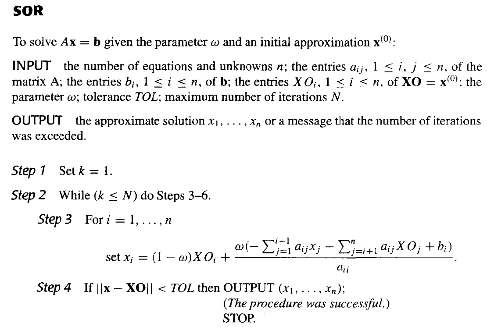
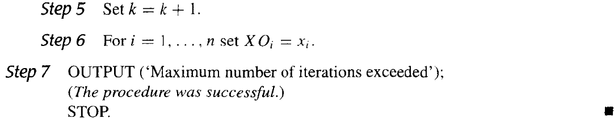
7.4 误差界与迭代改进 | Error Bounds and Iterative Refinement¶
误差界¶
对于线性方程组 \(\mathbf{Ax}=\mathbf{b}\) ，\(\mathbf{A}\)是非奇异的。如果 \(\mathbf{A}\) 和 \(\mathbf{b}\) 存在误差，那么解 \(\mathbf{x}\) 也会存在误差。
\(\mathbf{A}\) 精确，\(\mathbf{b}\) 有误差¶
即 \(\mathbf{Ax}=\mathbf{b}\) 变成 \(\mathbf{A(x+\delta x)}=\mathbf{b}+\delta\mathbf{b}\) 。所以有：
根据推论
对于任意向量 \(\mathbf{z}\neq\mathbf{0}\)，矩阵 \(\mathbf{A}\) 和任意一个自然范数 \(\|\cdot\|\)，有
我们有：
所以
我们记非奇异矩阵 \(A\) 相对于范数 \(\|\cdot\|\) 的条件数为：
当 \(K(\mathbf{A})\) 很大时，\(\mathbf{A}\) 是病态的，当 \(K(\mathbf{A})\) 接近于 \(1\) 时，\(\mathbf{A}\) 是良态的。
\(\mathbf{A}\) 有误差，\(\mathbf{b}\) 精确¶
即 \(\mathbf{Ax}=\mathbf{b}\) 变成 \(\mathbf{(A+\delta A)(x+\delta x)}=\mathbf{b}\) 。所以有：
这里的 \(\delta\mathbf{A}\) 往往是一个小量。
证明\(\|\mathbf{(I+A^{-1}\delta A)^{-1}}\|\leq\frac{1}{1-\|\mathbf{A^{-1}\delta A}\|}\)
推论
对于矩阵 \(\mathbf{F}\)，若\(\|\mathbf{F}\|<1\)，则\(\mathbf{I}\pm\mathbf{F}\)是非奇异的，且
下面给出 \(\mathbf{I} - \mathbf{F}\)情况的证明
因为 \(\|\mathbf{-F}\|=\|\mathbf{F}\|<1\)，所以我们将\(\mathbf{-F}\)替换 \(\mathbf{F}\) ，就可以得到 \(\mathbf{I+F}\)情况的证明
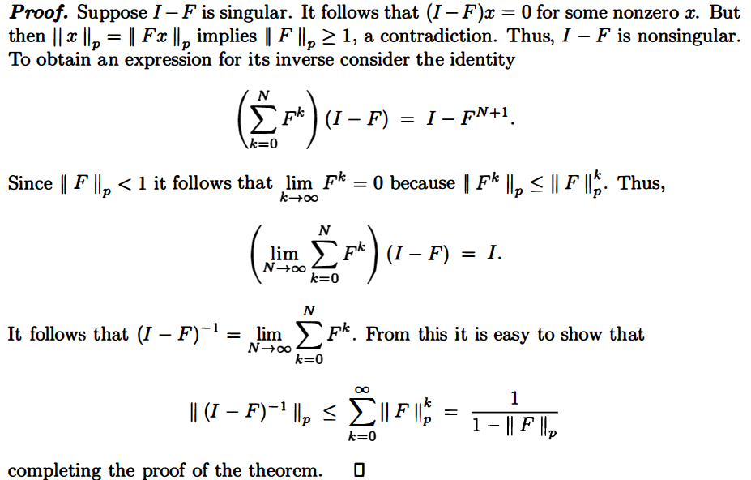
推论
证明
我们有
而
因为\(\|\delta\mathbf{A}\|\)相对于\(\|\mathbf{A}\|\)很小，所以往往有\(\|\mathbf{A^{-1}\delta A}\|\leq 1\)，所以\(\mathbf{I+A^{-1}\delta A}\)是非奇异的，且
所以在\(\|\mathbf{A^{-1}\delta A}\|\leq 1\)的情况下（我们不妨将其放缩为\(\|\mathbf{\delta A}\|\leq\|\frac{\mathbf{1}}{A^{-1}}\|\)），有：
所以
所以：
\(\mathbf{A}\)，\(\mathbf{b}\) 都有误差¶
即 \(\mathbf{Ax}=\mathbf{b}\) 变成 \(\mathbf{(A+\delta A)(x+\delta x)}=\mathbf{b}+\delta\mathbf{b}\) 。所以有：
所以，当\(\|\delta\mathbf{A}\|<\frac{1}{\|\mathbf{A}^{-1}\|}\)时，有：
所以
因此，当\(\|\delta\mathbf{A}\|<\frac{1}{\|\mathbf{A}^{-1}\|}\)时，有：
\(K(\mathbf{A})\) 的性质¶
我们记非奇异矩阵 \(A\) 相对于范数 \(\|\cdot\|\) 的条件数为：
当 \(K(\mathbf{A})\) 很大时，\(\mathbf{A}\) 是病态的，当 \(K(\mathbf{A})\) 接近于 \(1\) 时，\(\mathbf{A}\) 是良态的。
- \(K(\mathbf{A})_p\geq 1\) 对所有的自然范数 \(\|\cdot\|_p\) 成立；
- 如果 \(\mathbf{A}\) 是对称的，那么 \(K(\mathbf{A})_2=\frac{|\lambda_{max}|}{|\lambda_{min}|}\)，其中 \(\lambda_{max}\) 和 \(\lambda_{min}\) 分别是 \(\mathbf{A}\) 的最大和最小特征值；
- \(K(a\mathbf{A})=K(\mathbf{A})\)，其中 \(a\) 是一个非零常数；
- \(K(\mathbf{A})_2=1\) 当且仅当 \(\mathbf{A}\) 是正交矩阵(\(\mathbf{A}^T\mathbf{A}=\mathbf{I}\))；
- \(K(\mathbf{RA})_2 =K(\mathbf{AR})_2 = K(\mathbf{A})_2\)，其中 \(\mathbf{R}\) 是一个正交矩阵；
题目例子¶
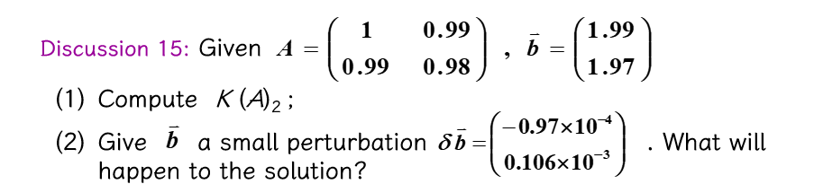
(1)

(2)

Chapter 8 逼近论 | Approximation Theory¶
逼近和插值的区别在于，插值是要求通过所有的数据点，而逼近没有这个限制，而是要求逼近的函数和原函数的误差尽可能小——尽可能接近每个点。
8.1 Discrete Least Squares Approximation | 离散最小二乘逼近¶
误差表达¶
设 \(p(x)\) 是逼近函数，\(y_{i}\) 是给定的 \(n\) 个数据点，那么逼近误差的三种表达方式如下：
Minimax problem¶
这用初等技术是解决不了的
Absolute deviation¶
困难在于绝对值函数在零点不可微，可能无法求解多元函数的最小值。
Least squares¶
此即为最小二乘的误差表达，也是最常用的逼近方法。
我们的目标是找到一个 \(p(x)\)，使得 \(E_2(p)\) 最小。
离散最小二乘逼近¶
定义： \(P_n(x)\) 是 \(m\) 个数据点的离散最小二乘逼近，如果 \(P_n(x)\) 是 \(n\) 次多项式，且满足
其中 \(\mathbb{P}_{n}\) 是 \(n\) 次多项式的集合，\(n\) 应远远小于 \(m\)，如果 \(n=m-1\)，其即为 lagrange 插值。
离散最小二乘逼近的解¶
设 \(P_n(x) = a_0 + a_1 x + \cdots + a_n x^n= \sum\limits_{i=0}^{n} a_i x^i\)。
为了使 \(E_2\) 最小，则其必要条件是
即
即
也就是
\(P(x)\) 线性¶
即 \(n=1\) 。此时，\(P_1(x) = a_0 + a_1 x\)，有
所以
\(P(x)=\frac{x}{ax+b}\)¶
令 \(Y_i = \frac{1}{y_i}\)，\(X_i = \frac{1}{x_i}\)，则可化为
线性最小二乘即可
\(P(x)=a e^{-b/x}\)¶
令 \(Y_i = \ln y_i\)，\(X_i = \frac{1}{x_i}\)，则可化为
线性最小二乘即可。
8.2 Orthogonal Polynomials and Least Squares Approximation | 正交多项式与最小二乘逼近¶
刚刚是离散化的最小二乘逼近，现在是连续的最小二乘逼近。
给定定义在 \([a,b]\) 上的函数 \(f(x)\)，我们希望找到一个 简单的函数 \(p(x)\) 来逼近 \(f(x)\)，使得
最小。
广义多项式(Generalized Polynomial)：用线性无关的函数 \(\phi_0(x), \phi_1(x), \cdots, \phi_n(x)\) 的线性组合 \(P(x)=\sum\limits_{i=0}^{n} a_{i} \phi_{i}(x)\) 来逼近 \(f(x)\)，这里的 \(P(x)\) 称为广义多项式。
- Trigonometric polynomial: \(\phi_{i}(x)=\cos (i x)\) or \(\sin (i x)\)
- Exponential polynomial: \(\phi_{i}(x)=e^{k_i x}, k_i \neq k_j\)
- 记 \(\Pi_n(x)\) 为 阶数最多为 \(n\) 的多项式的集合，\(\Pi_n(x)\) 是一个线性空间，\(\Pi_n(x)\) 的基为 \(\{1, x, x^2, \cdots, x^n\}\)，可以拿来做广义多项式的基。
Weight Function | 权函数¶
离散的情况下，为了在某些点上分配不同程度的重要性，我们在计算离散最小二乘逼近的误差表达式时附上权重：
连续的情况下，我们也可以引入权重函数 \(w(x)\)，使得
Inner Product and Norm | 内积与范数¶
我们定义内积为
如果 \(\langle f, g\rangle = 0\)，则称 \(f\) 和 \(g\) 正交。
我们定义范数为
所以我们可以把误差表达式写成
寻找多项式的系数¶
设 \(P(x)=a_{0} \phi_{0}(x)+a_{1} \phi_{1}(x)+\cdots+a_{n} \phi_{n}(x)\)，与离散的情况类似，我们要使得 \(E\) 最小，即
写成矩阵形式即为
左边的矩阵为对称矩阵。
离散例子
可以证明，离散时的式子也是这样的。

构造正交多项式¶
由 \(H_{ij}^{(n)}=\frac{1}{i+j-1}\) 定义的 \(n\times n\) 的 Hilbert 矩阵是一个病态矩阵。在求解中往往因为舍入误差而导致结果不准确。
为了解决这个问题，我们可以通过正交化的方法来构造正交多项式，也就是让前文中提到的矩阵变成对角矩阵。这样就不需要进行求逆了。
此时的系数可以直接通过
来计算。
我们可以构造出一系列的正交多项式。用下面定义的多项式函数集 \(\{\phi_{0}(x), \phi_{1}(x), \cdots, \phi_{n}(x)\}\) 关于权函数 \(w(x)\) 是正交的：
其中 \(B_k\) 和 \(C_k\) 是常数，可以通过
来计算。
题目例子

里面各项已经在之前的图片中计算过了。
伪代码¶

其中误差的计算推导如下：

8.3 Chebyshev Polynomials and Economization of Power Series | 切比雪夫多项式与幂级数的缩减¶
Chebyshev Polynomials | 切比雪夫多项式¶
Target 1¶
上文我们知道了误差的计算方式，现在我们试图找到一个 \(n\) 阶多项式 \(P_n\) 来逼近函数，使得误差 \(\|P_n-f\|\) 最小。
若 \(P(x_0)-f(x_0)=\pm \|P_n-f\|\) ，则定义点 \(x_0\) 为 Deviation point
我们的多项式 \(P_n\) 有如下性质：
- 如果 \(f\in C[a,b]\)，且 \(f\) 不是 \(n\) 阶多项式，则存在唯一的多项式 \(P_n\) 使得 \(||P_n-f||_\infty\) 最小
- \(P_n(x)\) 存在，且必须有正负偏差点，否则肯定还有更好的逼近函数
-
（切比雪夫定理）\(P_n(x)\) 最小化 \(||P_n-f||_\infty\) \(\Leftrightarrow\) \(P_n(x)\) 至少有 \(n+2\) 个正负偏差点。也就是说，存在一组点 \(a \leq t_1 < \cdots < t_{n+2} \leq b\)，使得
\[P_n(t_k) - f(t_k) = \pm (-1)^k ||P_n-f||_\infty\]这组点 \(\{t_k\}\) 被称为切比雪夫交替序列(Chebyshev alternating sequence)。

Target 2.0¶
决定插值点 \(\{x_0, \cdots, x_n\}\) 使得 \(P_n(x)\) 最小化余项。余项为：
Target 2.1¶
找到插值点 \(\{x_1, \cdots, x_n\}\) 使得 \(||w_n||_\infty\) 在 \([-1,1]\)上最小化，其中 \(w_n(x)=\prod\limits_{i=1}^n(x-x_i)\)
注意到
这里的 \(P_{n-1}(x)\) 是 \(n-1\) 阶多项式，和上文的 \(P_n(x)\) 不是一个东西，此语境下没有关联。
Target 3.0¶
问题转化为找到 \(x_1, \cdots, x_n\) 使得 \(||x^n-P_{n-1}(x)||_\infty\) 在 \([-1,1]\)上最小化。
从切比雪夫定理我们知道，\(P_{n-1}(x)\) 相对于 \(x^n\) 有 \(n+1\) 个偏差点，也就是说，\(w_n(x)\) 在 \(n+1\) 个点上交替取得最大值和最小值。
引入Chebyshev Polynomials¶
为了实现上面的目标，我们先想到三角函数。\(cos(n\theta)\) 在 \([-1,1]\) 上有 \(n+1\) 个交替的最大值和最小值，但是 \(cos(n\theta)\) 不是多项式。 又由于 \(cos(n\theta)\) 可以表示为 \(\sum\limits_{k=0}^{n} a_k (\cos\theta)^k\)，这就是我们想要的多项式形式。
令 \(x=\cos\theta\)，则 \(x \in [-1,1]\)，所以我们可以把 \(cos(n\theta)\) 写成 \(T_n(x)\) 的形式，\(T_n(x)\) 称为切比雪夫多项式(Chebyshev polynomial)。
切比雪夫多项式的性质：
- 当 \(x=\cos\frac{k\pi}{n}\) 时，\(T_n(x)\) 取到极值 \((-1)^k\)
我们也可以用递推公式来定义切比雪夫多项式：
可以得出性质：
- 最高阶项的系数为 \(2^{n-1}\)
- 在\([0,1]\)上，\(T_0(x), T_1(x), \cdots, T_n(x)\) 关于权函数 \(\frac{1}{\sqrt{1-x^2}}\) 正交
通过计算得出
回到 Target 3.0¶
我们可以把 \(w_n\) 写成 \(T_n(x)\) 的形式：
称之为首一切比雪夫多项式(The monic Chebyshev polynomial)。
可以证明，首一切比雪夫多项式是所有首一多项式中，最小化 \(||w_n||_\infty\) 的多项式。
回到 Target 2.1¶
我们将 \(w_n\) 写成 \(T_n(x)\) 的形式：
这里的 \(\tilde\Pi_n\) 是所有首一多项式的集合。
所以，我们取的插值点即为 \(T_n(x)\) 的 \(n\) 个零点
回到 Target 2.0¶
在 $[-1,1] 上选取的插值点为 \(T_n(x)\) 的 \(n\) 个零点，能够使得余项最小，其上确界为
使用线性变换 \(x=\frac{b-a}{2} t+\frac{b+a}{2}\)，我们可以将其推广到闭区间 \([a,b]\) 上。
例题¶

Economization of Power Series | 幂级数的缩减¶
考虑到，用一个 \(n\) 阶多项式 \(P_n(x) = a_n x^n + a_{n-1} x^{n-1} + \cdots + a_1 x + a_0\) 来逼近一个任意的 \(n\) 阶多项式 \(P_n(x)\)，我们可以通过去掉 \(P_n(x)\) 中的 含 \(a_n x^n\) 项的 \(n\) 阶多项式 \(Q_n(x)\) 来逼近 \(P_n(x)\)，那么
为了使得精确度的损失最小， \(Q_n(x)\) 必须为
例题¶

降两阶就都要做两次。
Chapter 9 逼近特征值 | Approximating Eigenvalues¶
9.2 幂法 | Power Method¶
幂法是用来确定矩阵的主特征值（即，绝对值最大的特征值）和对应的特征向量的一种方法。
基本思想¶
设\(\mathbf{A}\)是一个\(n\times n\)的矩阵，且恰有一个特征值\(\lambda_1\)的绝对值最大 有\(n\)个特征值\(\lambda_1,\lambda_2,\cdots,\lambda_n\)(\(|\lambda_1|>|\lambda_2|\geq\cdots\geq|\lambda_n|\))，对应的特征向量为\(\mathbf{v}_1,\mathbf{v}_2,\cdots,\mathbf{v}_n\)，则任意一个非零向量\(\mathbf{x}^{(0)}\)都可以表示为这\(n\)个特征向量的线性组合，记\(\beta_j\)为常数，则
\(\mathbf{x}^{(0)} \neq 0\)，且\((\mathbf{x}^{(0)},\mathbf{v}_1)\neq 0\)，否则：因为我们无法确保对于任意的初始向量\(\mathbf{x}^{(0)}\)都有\(\beta_1\neq 0\)，所以迭代的结果可能不是\(\mathbf{v}_1\)，而是满足 \((\mathbf{x}^{(0)},\mathbf{v}_m)\neq 0\) 的第一个向量\(\mathbf{v}_m\)，相应地，得到的特征值为 \(\lambda_m\) 。
等式两边同时左乘\(\mathbf{A},\mathbf{A}^2,\cdots,\mathbf{A}^k\)，得到
所以
如果\(|\lambda_1|<1\)，则\(\lim\limits_{k\to\infty}\mathbf{A}^k\mathbf{x}=0\)，即\(\mathbf{x}\)收敛到0向量。如果\(|\lambda_1|>1\)，则序列发散。
对足够大的\(k\)，\(\mathbf{x}^{(k)},\mathbf{x}^{(k-1)}\)可以近似地表示为
所以，我们可以通过迭代\(\mathbf{x}^{(k)}=\mathbf{A}\mathbf{x}^{(k-1)}\)来逼近\(\lambda_1\)。
归一化¶
实际计算时，为了避免计算过程中出现绝对值过大或过小的数参加运算，通常在每步迭代时，将向量“归一化”即用的按模最大的分量。
我们需要对\(\mathbf{x}^{(k)}\)进行归一化，使得\(\|\mathbf{x}^{(k)}\|_\infty=1\)，即
伪代码¶
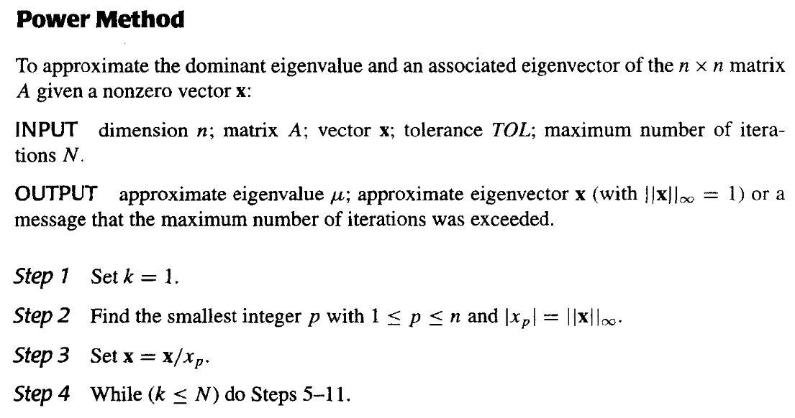

- 对唯一的主特征值\(\lambda_1\)，如果其重数大于1，则幂法仍然有效
- 如果\(\lambda_1=-\lambda_2\)，则幂法失效
- 因为我们无法确保对于任意的初始向量\(\mathbf{x}^{(0)}\)都有\(\beta_1\neq 0\)，所以迭代的结果可能不是\(\mathbf{v}_1\)，而是满足 \((\mathbf{x}^{(0)},\mathbf{v}_m)\neq 0\) 的第一个向量\(\mathbf{v}_m\)，相应地，得到的特征值为 \(\lambda_m\) 。
- Aitken's \(\Delta^2\) 可以加速收敛
收敛速度¶
因为\(\mathbf{x}^{(k)}=\lambda_1^k\sum\limits_{j=1}\limits^n\beta_j(\frac{\lambda_j}{\lambda_1})^k\mathbf{v}_j\)，假设\(\lambda_1>\lambda_2\geq\cdots\geq\lambda_n\)，且\(|\lambda_2|\geq |\lambda_n|\)，则我们的目标就是让\(\frac{\lambda_2}{\lambda_1}\)尽可能小，这样收敛速度更快。

记\(\mathbf{B}=\mathbf{A}-p\mathbf{I}\)，其中\(p=\frac{\lambda_2+\lambda_n}{2}\)，则\(\mathbf{B}\)的特征值为\(\lambda_1-p,\lambda_2-p,\cdots,\lambda_n-p\)，因为\(|\frac{\lambda_2-p}{\lambda_1-p}|<|\frac{\lambda_2}{\lambda_1}|\)，所以此时\(\mathbf{B}\)的收敛速度更快。
但是我们并不知道\(\lambda_2\)和\(\lambda_n\)，所以这不一定是一个好的选择。
反幂法 | Inverse Power Method¶
反幂法一般是用来确定\(\mathbf{A}\)中与特定数\(q\)最接近的特征值，即\(\lambda_i\approx q\)。 此时对任意的\(j\neq i\)，有
根据刚刚在收敛速度中的分析，可知：此时 \((\mathbf{A}-q\mathbf{I})^{-1}\) 的主特征值凸显出来了，可以更快地收敛到 \(\frac{1}{\lambda_i-q}\)。
其伪代码为：